גלולת המצלמה · 7883 מילים · 12 תמונות · 2 סרטונים
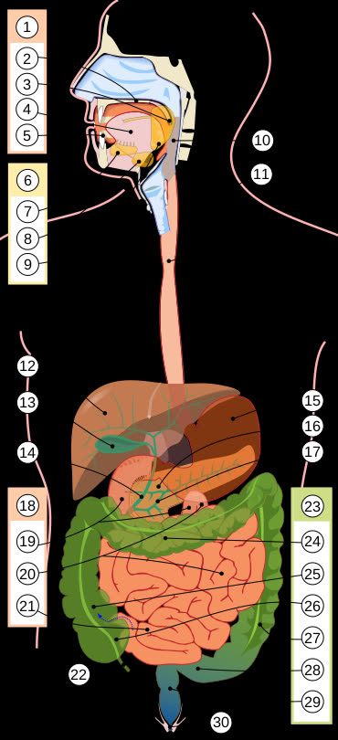
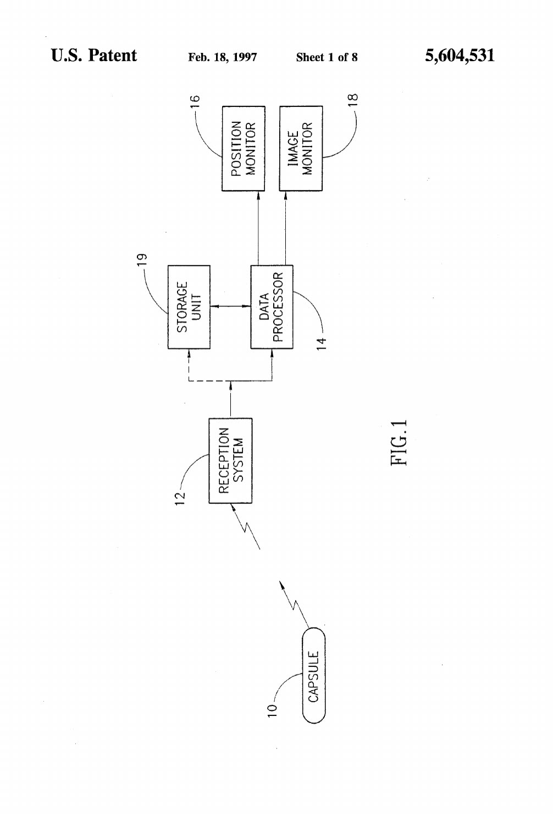
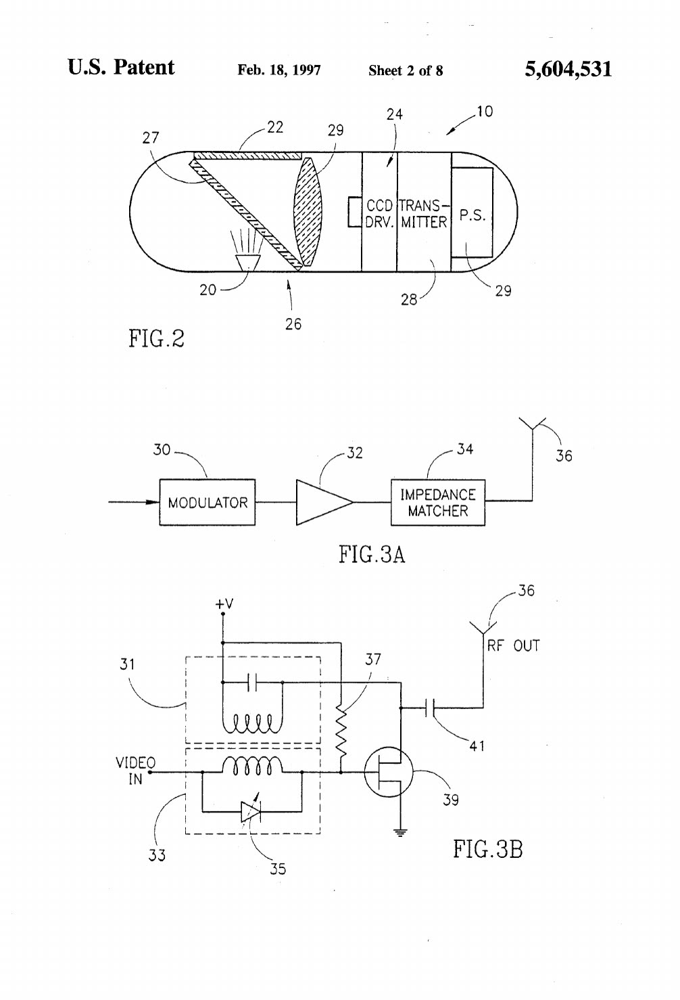
CCD DRV. — מנהל חיישן מסוג CCD. הרכיב הזה, שרשום בפטנט, הוא בדיוק הרכיב שהצוות נאלץ לזרוק כדי שהגלולה תעבוד. [מ-035]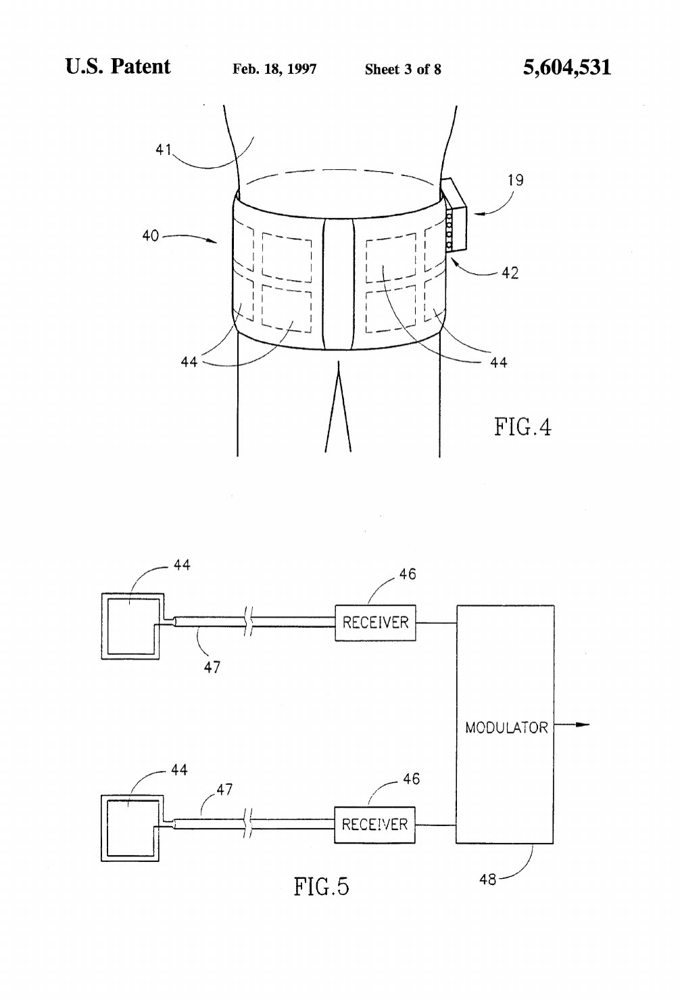
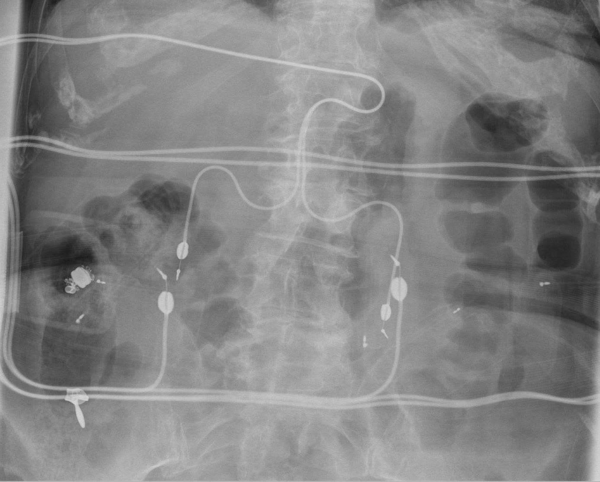
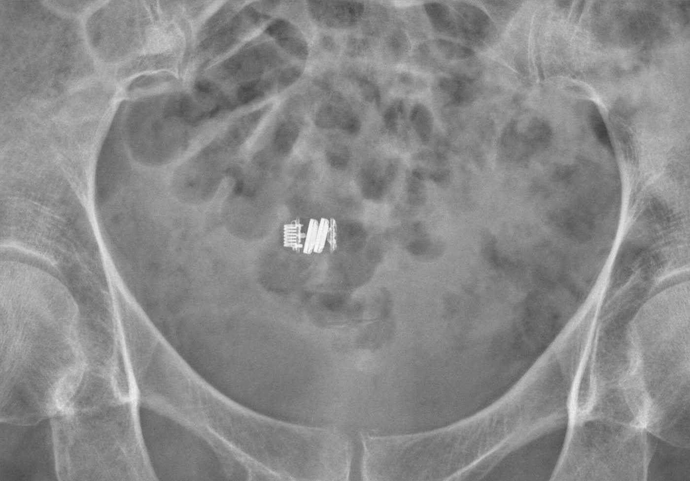
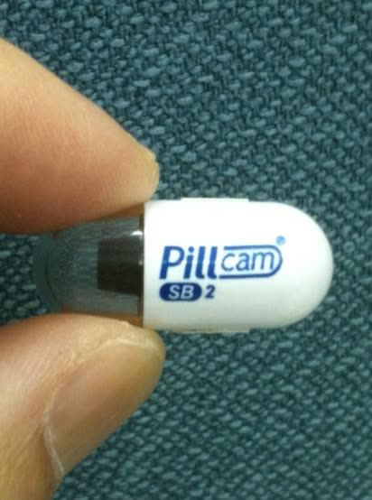
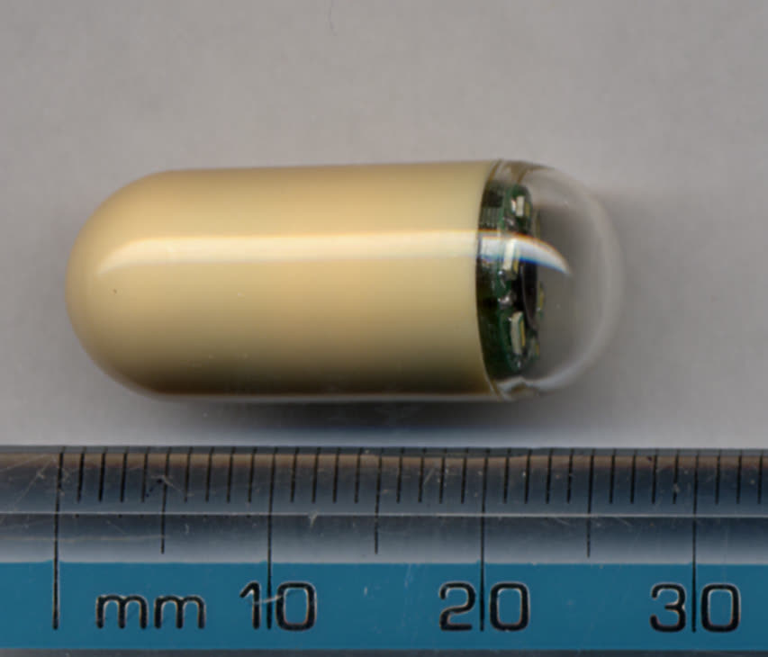
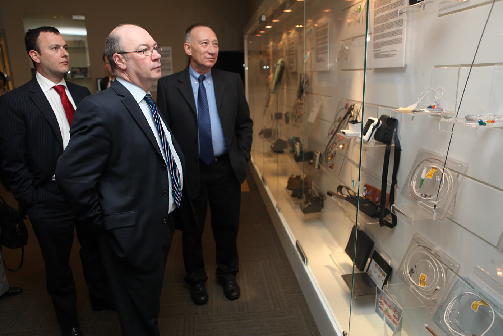
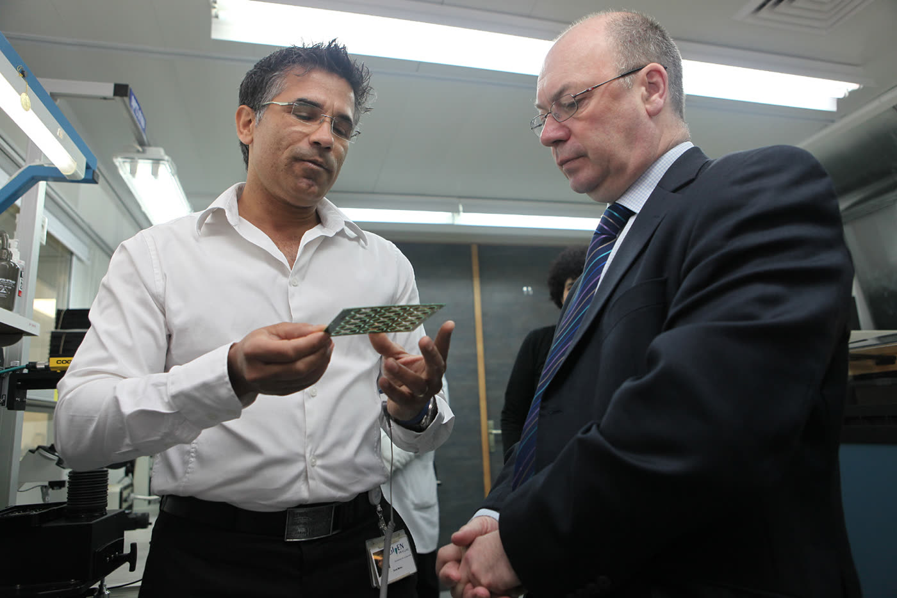
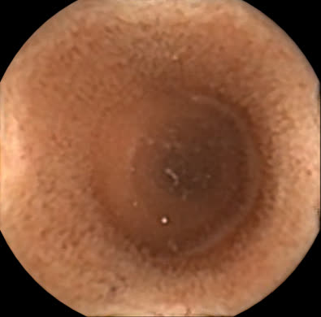
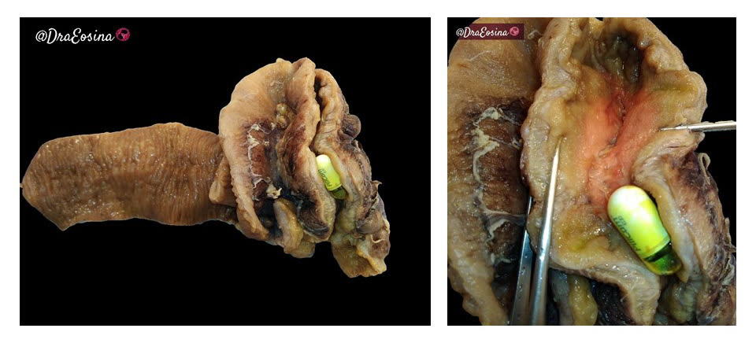
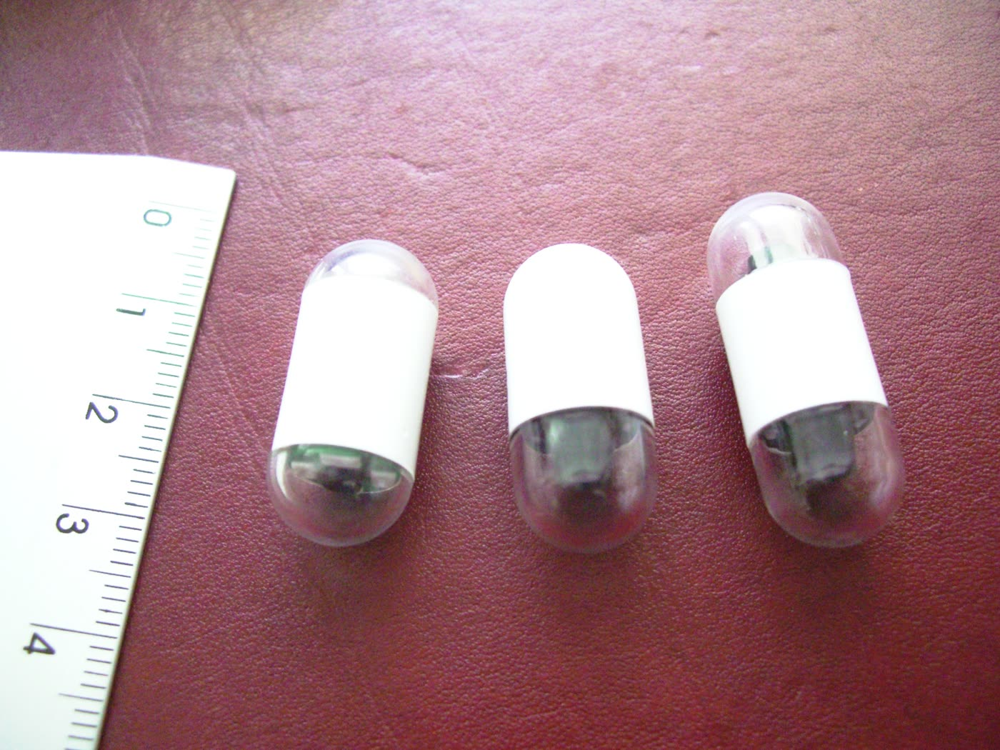
### "מרפי היה ישן" — גבריאל אידן, דקה וארבעים וחמש הנציבות האירופית, 30.5.2011 · הנציבות האירופית פרסמה את הפרופיל הזה במאי 2011, בזמן שאידן היה מועמד סופי לפרס הממציא האירופי. בפחות משתי דקות הוא מספר את כל הסיפור בעצמו: השכן הגסטרואנטרולוג שאמר לו שהאנדוסקופים החדשים לא מגיעים למעי הדק, וחמישה עד שישה מטרים נשארים לא ידועים ולא ממופים. ואז החלק שאינו מופיע בשום מקור אחר. "אנשים אמרו לי שהחלון יתלכלך," הוא אומר. ההיגיון שלהם היה טוב; העובדה לא. המעי הדק, אחרי צום קצר, מלא מים. "אנחנו אומרים שבמקרה הספציפי הזה מרפי היה ישן." אלה דבריו של אידן על המצאתו שלו. [מ-086 · מ-087 · מ-088 · מ-090] ###
מעי הדק, וחמישה עד שישה מטרים נשארים לא ידועים ולא ממופים. ואז החלק שאינו מופיע בשום מקור אחר. "אנשים אמרו לי שהחלון יתלכלך," הוא אומר. ההיגיון שלהם היה טוב; העובדה לא. המעי הדק, אחרי צום קצר, מלא מים. "אנחנו אומרים שבמקרה הספציפי הזה מרפי היה ישן." אלה דבריו של אידן על המצאתו שלו. [מ-086 · מ-087 · מ-088 · מ-090] ### הגרסה המלאה, מהגוף שמעניק את הפרס משרד הפטנטים האירופי, 17.3.2011, 5:47 · שני הסרטונים אינם שני ראיונות. חמישה קטעים חוזרים בשניהם מילה במילה, ובהם המשפט על החגורה והז'קט. זהו ריאיון מצולם אחד, בשתי עריכות — וכל מה שאידן אומר כאן נאמר פעם אחת. [מ-102] הפרופיל הארוך, שהעלה משרד הפט
pillcam · c1bab11dנכתב 22.8.2026 · העושה (החברה הרזה)
טיוטה ממופתחת. כל משפט עובדתי נושא בסוגריים מרובעים את מזהי הממצאים
שממנו נולד. משפט שאינו נושא ממצא מסומן [חיבור] ואינו טוען עובדה חדשה.
אין משפט יתום.
לא הועלה דבר לאתר החי.
בשנת 1981, בבוסטון, אמר רופא לשכנו המהנדס שהמעי הדק נשאר מחוץ להישג ידה
של האנדוסקופיה. [מ-031 · מ-086] עשרים שנה אחר כך אישר מינהל המזון והתרופות
האמריקאי גלולה נבלעת שמצלמת אותו, ופתח עבורה סיווג רגולטורי חדש מפני שלא
מצא לה מכשיר דומה בשוק. [מ-010 · מ-011] בין שני התאריכים עומדים אנשים רבים:
הפטנט נושא שני שמות, המאמר המדעי נושא ארבעה, וסקירת ההיסטוריה של התחום
מונה יותר מעשרה מהנדסים ורופאים בשתי מדינות. [מ-001 · מ-007 · מ-036 · מ-037 · מ-038]
הפטנט עצמו, כפי שנרשם, לא היה בר-ביצוע — החיישן היה גדול מדי ורעב לאנרגיה,
והתכן האופטי לא התאים. [מ-035] האדם הראשון שבלע גלולת מצלמה היה רופא בריטי,
במרתף מרפאה ברמת השרון, באוקטובר 1999. [מ-038] עד 31 בדצמבר 2012 נמכרו יותר
מ-1.9 מיליון גלולות ביותר מ-75 מדינות. [מ-019] ובאחת מכל שש בדיקות הגלולה
אינה מספיקה לעבור את כל המעי הדק, ובכ-1.4 אחוז מהבדיקות היא נתקעת בגוף.
[מ-042 · מ-041] היא אינה מחליפה את האנדוסקופיה, ולפי עדותו של גבריאל אידן
בראיון משנת 2011 היא גם לא נועדה לכך. [מ-046 · מ-094]
מערכת העיכול של אדם ארוכה יותר משנראה. הגסטרוסקופ, הצינור שמוחדר דרך הפה,
הגיע ל-1.2 המטרים העליונים. הקולונוסקופ, שמוחדר מלמטה, ל-1.8 המטרים
התחתונים. באמצע נשארו שישה מטרים — המעי הדק — שבלשון משרד הפטנטים
האירופי "נותרו קשים יותר להגעה". [מ-028] הפטנט עצמו חד יותר: האנדוסקופים
"אינם נעים בקלות דרך המעי הדק, ולכן אינם מספקים תצפית על המעי הדק".
[מ-005]
צילומי רנטגן ובדיקות אולטרסאונד לא נתנו מבט ישיר לשם. [מ-028] לפי משרד
הפטנטים האירופי, לעיתים נאלצו הרופאים לבצע ניתוח אבחוני — לפתוח את
הבטן כדי להסתכל. [מ-028]
גלולות שבולעים כבר היו קיימות. הפטנט של 1994 מתאר אותן בעצמו בפרק הרקע:
קפסולות אלקטרוניות נבלעות, "קפסולות היידלברג", שאספו נתונים ושידרו אותם
החוצה. [מ-005] הן מדדו חומציות, חום ולחץ. הן לא צילמו. [מ-005] ואילו
האנדוסקופ צילם, אבל, בלשון הפטנט, "מפני שאינם גמישים במיוחד, הם אינם נעים
בקלות דרך המעי הדק, ולכן אינם מספקים תצפית על המעי הדק". [מ-005]
זו הייתה הבעיה: חולה מדמם, ואיש אינו יכול לראות מאיפה. [חיבור]
ב-1981 יצא גבריאל אידן, מהנדס בכיר במדור התכן האלקטרו-אופטי של רפאל,
לשבתון. את החופשה הקדיש ללימוד הדמיה רפואית — רנטגן ואולטרסאונד — עבור
חברת אלסינט, בבוסטון. [מ-031]
שכנו לאותה שנה היה איתן שקפא, גסטרואנטרולוג ישראלי שגם הוא שהה בשבתון
במוסד רפואי בבוסטון. [מ-031] השניים התיידדו, ואידן שמע ממנו על השימוש
בסיבים אופטיים במערכת העיכול. שקפא הסביר לו שטכנולוגיית הסיבים האופטיים
משאירה את המעי הדק מחוץ להישג יד לבדיקה רפואית. [מ-031]
אידן עצמו מספר את אותו רגע בפרופיל שפרסמה עליו הנציבות האירופית ב-2011:
"היה לי שכן שהיה גסטרואנטרולוג, והוא אמר לי שהאנדוסקופים החדשים לא יכולים
להיכנס למעי הדק. חמישה עד שישה המטרים האלה היו באמת לא ידועים, לא ממופים."
[מ-086 · מ-075] בפרופיל הארוך שפרסם משרד הפטנטים האירופי באותה שנה הוא קורא
לאזור הזה, במילותיו שלו, "שטח לא ידוע — area incognito". [מ-095]
שימו לב למה שאין כאן. בכל החומר המוקלט שבו אידן מדבר על ההמצאה —
שבע דקות וחצי שפרסמו הנציבות האירופית ומשרד הפטנטים האירופי — אינו
מוזכרים טילים, ראשי חימוש או רפאל ולו פעם אחת. [מ-086 · מ-075 · מ-094]
וכאן צריך לסייג את המשקל של הראיה הזאת. שלושת הפרסומים הרשמיים
אינם שלוש עדויות נפרדות. השלישי הוא עריכה חוזרת של הראשון, מילה במילה
[מ-101]; ובין השניים הראשונים חוזרים חמישה קטעים זהים לחלוטין — למשל
"תגיע למרפאה, תבלע את הגלולה, תשים את החגורה, תלבש את הז'קט ותלך
לעבודה", שמופיע בשניהם באותן מילים. [מ-102] כלומר לפנינו **ריאיון
מצולם אחד בשלוש עריכות**, לא שלוש פעמים שבהן אידן בחר שלא להזכיר את
רפאל. [חיבור]
הסיפור המקובל, שלפיו טכנולוגיה של ראש חימוש מונחה הפכה לגלולה, אינו
מופיע בפטנט, אינו מופיע אצל משרד הפטנטים האירופי, ואינו מופיע בסקירה
ההיסטורית של התחום. [מ-034 · מ-003] הוא כן מופיע במקום אחד:
מנכ"ל החברה, ד"ר גבריאל מרון, אמר לגלובס ב-2004 — במרכאות, בשמו —
"הרעיון הזה, של לקחת טכנולוגיה מתחום הטילים וליישם אותה בקפסולה קטנה
הוא כמעט שלא נתפס". [מ-064] הוא אינו נוקב במה בדיוק עבר: לא חיישן,
לא אופטיקה, לא שידור, לא מקור כוח. מה שכן מתועד: אידן היה מהנדס
אלקטרו-אופטיקה ברפאל, ורפאל הייתה בעלת ההמצאה. [מ-031 · מ-003]
עשר שנים אחר כך, בשבתון שני, שקל אידן להשתמש במצלמת CCD זעירה המחוברת
לחבל טבור חשמלי. אורך המעי הדק פסל את האפשרות. [מ-032]
אז הוא הציע לנתק את חבל הטבור: לחבר למצלמה משדר זעיר, ולתת למכשיר לנוע
בכוחות עצמו. [מ-032] מיד נפתחה בעיה חדשה. רכיבי ה-CCD צורכים אנרגיה רבה,
וסוללות זעירות היו מאפשרות, במקרה הטוב, עשר דקות שידור. [מ-032]
מסע דרך המעי הדק אורך שעות.
ב-1993 הגיע אידן לרעיון שפתר את זה: לפצל את המערכת לשלושה חלקים.
חלק ראשון — המצלמה והמשדר, בתוך הגוף. חלק שני — מקליט המחובר למערך
חיישנים המונח על פני הבטן. חלק שלישי — תוכנה שמעבדת את המידע השמור,
שהרופא צופה בה כשנוח לו. [מ-032] הגלולה כבר לא הייתה צריכה לעשות
הכול. היא הייתה צריכה רק לצלם ולשדר החוצה. [חיבור]
בקשת הבכורה הוגשה בישראל, IL108352, ב-17 בינואר 1994. הבקשה
האמריקאית הוגשה שנה בדיוק אחריה, ב-17 בינואר 1995. הפטנט הוענק ב-**18
בפברואר 1997**, מספר 5,604,531, בשם "In vivo video camera system". [מ-002]
על הפטנט רשומים שני ממציאים, לא אחד: Gavriel J. Iddan ו-**Doron
Sturlesi**. [מ-001] מדריך החברים של האגודה הבינלאומית לאופטיקה
ופוטוניקה מוסר עליו שתי שורות בלבד — "ד"ר דורון סטורלסי", ושיוך
לרפאל. תחום הדוקטורט אינו מופיע שם. [מ-081] שמו אינו מוזכר
בשום מקור אחר שנפתח — לא בסקירה ההיסטורית, לא באתר משרד הפטנטים
האירופי, ולא בעיתונות הישראלית. [מ-081] מה בדיוק הייתה תרומתו להמצאה
אינו מתועד. [מ-081]
ובעלת ההמצאה לא הייתה אף אחד משניהם. בפרק האירועים המשפטיים של הפטנט
רשומה המחאה בתוקף מ-5 במרץ 1995: שני הממציאים העבירו את זכויותיהם
ל"מדינת ישראל — משרד הביטחון, רשות לפיתוח אמצעי לחימה". [מ-003] שלוש
שנים אחר כך, בתוקף מ-16 באפריל 1998, העבירה רפאל את הפטנט לחברת
Given Imaging. [מ-004]
כאן נמצא ההבדל בין פטנט למוצר. [חיבור]
הפטנט המקורי של אידן, כפי שאושר ב-1997, תיאר שבב CCD — והשבב הזה היה
גדול מדי וצרך אנרגיה רבה מדי. האור, שנוצר בנימה מחוממת, צרך אנרגיה רבה
מדי, היה חלש מדי, ולא נדלק ונכבה מהר מספיק. התכן האופטי לא התאים. [מ-035]
המשפט האחרון הוא ציטוט: "The optical design was not suitable". [מ-035]
כדי שתהיה גלולה, היה צריך להמציא כמעט כל רכיב שלה מחדש. [מ-035] [חיבור]
גבריאל מרון עשה בדיוק את מה שנדרש: גייס את הכסף וגייס את הפיזיקאים
והמהנדסים. [מ-036] מתי בדיוק נפגשו השניים — המקורות אינם מסכימים.
הסקירה ההיסטורית של אדלר קובעת שאידן פגש את מרון ב-1994; [מ-036]
כתבת גלובס משנת 2004 כותבת ש"ב-1996 פנה עידן למירון". [מ-063] המשפט
הזה הוא קולו של העיתונאי ולא ציטוט מפי מרון, ולכן זו אינה עדות אישית
של בעל דבר. ייתכן ששני התאריכים מתארים שני אירועים שונים — היכרות,
ואחריה פנייה — אבל אף מקור אינו אומר זאת, ואיננו מכריעים. [חיבור]
מה שקרה אחר כך, לפי אותה כתבה: כל עוד לא הוצא פטנט סירב מרון להתייחס
לרעיון ברצינות, ורק אחרי קבלת הפטנט ב-1997 החליט מרון לכתוב את
התוכנית העסקית. [מ-063]
דב אבני, שגם הוא בילה שנים רבות ברפאל, הופקד ליצור מאפס חיישן
תמונה ומקור אור, ולמזער את כל הרכיבים. [מ-036] מומחה מוביל בתאגיד
Sarnoff בפרינסטון חזה שיהיה בלתי אפשרי לייצר תמונות חדות בטכנולוגיית
CMOS, מפני שבחום הגוף יחס האות לרעש נמוך מדי; אבני ידע שמהנדסים
ב-Tower Semiconductor במגדל העמק כבר פתרו את הבעיה הזאת. [מ-036]
את בעיית האנרגיה של ה-CCD פתר, כמעט במקרה, מאמר. אידן קרא כתב עת
להנדסה אופטית ונתקל במאמר של אריק פוסום האמריקאי, שתיאר שימוש
בשבב סיליקון מסוג CMOS וחזה שהוא יחליף את ה-CCD. חיישני CMOS צורכים
אחוז אחד מהאנרגיה של CCD. [מ-033] פוסום עצמו סייע אחר כך לצוות
המהנדסים של החברה. [מ-033] אותו מאמר של פוסום משנת 1993 מופיע גם
ברשימת המקורות של המאמר המדעי שפרסמו הממציאים ב-Nature. [מ-009]
עודד קורן ואבני היו הראשונים שהשתמשו בהמצאת ה-LED של נקמורה כמקור
אור למכשיר אופטי, מה שאפשר חיסכון וניהול אנרגיה ברמת המיקרו-שנייה;
כיפת האופטיקה קיבלה צורה אליפסואידית כדי למנוע החזרי אור. [מ-036]
את אב-הטיפוס העובד בנה צוות המו"פ בראשות ד"ר ארקדי גלוחובסקי,
והוא היה מוכן בינואר 1999. [מ-037]
ובמקביל, ובלי קשר, עבד בבריטניה פרופ' פול סוויין. הוא ניסה שידור
אלחוטי ממצלמות זעירות והצליח לשדר תמונות חיות מקיבת חזיר אל מסך וידאו;
העבודה פורסמה בכתב העת Gut ב-1997. [מ-037] באותה שנה נפגשו מרון וסוויין
בכנס UEGW בברמינגהם, והחליטו לאחד כוחות. [מ-037]
מי המציא — יש על כך מחלוקת פתוחה, ואיננו מכריעים בה. סקירה
היסטורית שכתב ד"ר סמואל אדלר ב-2017 מציגה את הרעיון כשל אידן,
וסוויין נכנס אליו ב-1997. [מ-031 · מ-032 · מ-037] סקירת יובל שפורסמה
ב-2025, שסוויין הוא אחד ממחבריה ומצהיר בה בעצמו שהוא "ממציא-שותף של
אנדוסקופיה קפסולרית", מציגה את החזון כשל סוויין ואת אידן כ"כושר
ההנדסה". [מ-045] שני המקורות הם צד מעוניין. [מ-045]
העובדות המתועדות הן אלה: על הפטנט האמריקאי רשומים אידן וסטורלסי,
וסוויין אינו רשום בו; [מ-001] על המאמר ב-Nature משנת 2000 חתומים ארבעה
— אידן, מרון, גלוחובסקי וסוויין; [מ-007] סוויין עשה עבודה מקבילה
עצמאית בבריטניה; [מ-037] וסוויין הוא זה שבלע ראשון. [מ-038]
ועובדה מתועדת נוספת, שאינה מכריעה אך שווה לדעת: **ב-2004 כתבו שני
הצדדים היסטוריה של התחום יחד.** ברשומת MEDLINE של המאמר —
"History and development of capsule endoscopy", *Gastrointest Endosc
Clin N Am* 2004;14(1):1-9 — רשומים "Iddan GJ, Swain CP", ואידן הוא
המחבר לכתובת, מטעם "Given Imaging, Ltd., New Industrial Park,
13 HaYetzira St., Yoqneam". [מ-103] גוף המאמר לא נפתח: הוא חסום
בתשלום אצל המוציא לאור, ולרשומה אין תקציר. לכן אין לדעת מה הוא אומר
על שאלת הייחוס, ואיננו טוענים דבר בשמו. [מ-103]
*אין בדף הזה תצלום של גבריאל אידן. לא נמצא תצלום שלו שמותר לפרסם —
וכך גם לגבי מרון, סוויין ושקפא.*
**פול סוויין קיבל את הכבוד להיות האדם הראשון על פני כדור הארץ שבלע
אנדוסקופ קפסולרי.** זה קרה באוקטובר 1999, במרפאתו של ד"ר שקפא ברמת
השרון. [מ-038] שקפא, סוויין וכמעט כל צוות החברה — שמונה עד עשרה
אנשים — נדחסו למרתף, עיניהם נעוצות במסך. [מ-038]
ואז, בלשון אדלר, "התרחשה דרמה קטנה". הגלולה לא יצאה מקיבתו של סוויין
במשך יותר משלוש שעות. שקפא החדיר לסוויין אנדוסקופ בלי הרדמה, ובעזרת לולאה הזיז את
הגלולה אל התריסריון. [מ-038]
התיאור הזה הוא עדותו של ד"ר סמואל אדלר, ואינו מצוין במקור שני. [מ-038]
מרון, שהיה בחברה באותה תקופה, מאשר את השנה ולא את הפרטים: "הקפסולה
הראשונה נבלעה ב-1999 ולא ידענו מה נראה. יכול היה להיות שהתמונות לא
ייצאו ברורות והעדשה תיראה מלוכלכת ואז אין לנו מוצר. אבל התוצאה הפתיעה
את כולנו." [מ-067]
החשש מהעדשה המלוכלכת לא היה שלו בלבד. לדברי אידן, "אנשים אמרו לי
שהחלון יתלכלך". התשובה, במילותיו: המעי הדק, אחרי צום של שעתיים, מלא
מים, ולכן התמונות יוצאות יפות — "אנחנו אומרים שבמקרה הספציפי הזה
מרפי היה ישן". [מ-087] מי היו אותם אנשים ומתי הזהירו — אינו מתועד.
[ש19]
התוצאה פורסמה ב-22 במאי 2000 בכתב העת Nature, במאמר של אידן,
מרון, גלוחובסקי וסוויין. [מ-007] המאמר טוען שזו הפעם הראשונה שמתאפשרת
הדמיה אנדוסקופית של המעי הדק כולו ללא כאב, ומדווח על ניסוי מוצלח
בבני אדם. [מ-008] זו טענת הממציאים על עצמם. [מ-008] סקירת היובל
של התחום מציבה את המאמר הזה בראש טבלת מחקרי אבן-הדרך שלו. [מ-052]
מינהל המזון והתרופות האמריקאי קיבל את הבקשה ב-11 ביוני 2001 והכריע
ב-1 באוגוסט 2001, החלטה מספר DEN010002. [מ-010]
ההכרעה עצמה מעניינת יותר מהתאריך. במסד הנתונים של ה-FDA רשום שהמסלול
היה Post-NSE: המכשיר **לא נמצא שווה-ערך מהותית לשום מכשיר קיים
בשוק**, ולכן לא יכול היה לעבור במסלול האישור הרגיל. הוא עבר במסלול
De Novo, וכתוצאה מכך נוצרה תקנה 876.1300 וסיווג חדש בשם "מערכת
הדמיה קפסולרית אלחוטית של מערכת העיכול". [מ-011] הרגולטור לא מצא
למכשיר אח ורע, ופתח עבורו מדף. [חיבור]
המכירות התחילו באותו חודש. [מ-020]
ובאוגוסט 2001 עוד לא קראו לה PillCam. המכשיר שאושר נקרא "Given
Diagnostic Imaging System"; השם המסחרי PillCam מופיע במסד ה-FDA
לראשונה ב-24 בנובמבר 2004. [מ-012]
איך היא עובדת, בלשון הממציא: "זהו בעצם אולפן טלוויזיה קטן. יש בו
מצלמה זעירה, יש בו תאורה, ויש בו משדר קטן למקליט חיצוני." [מ-088 · מ-074]
ובמספרים, מהדוח השנתי המבוקר של החברה: הגלולה מודדת **11 על 26
מילימטר, משדרת שתי תמונות בשנייה במשך שמונה שעות ויותר**,
מייצרת מעל 50,000 תמונות, ואז מפסיקה לפעול. [מ-021] היא חד-פעמית,
ויוצאת מהגוף בדרך הטבעית, בדרך כלל תוך יום או יומיים. [מ-022] היא
נעה בתנועת שרירי המעי, בלי כוח חיצוני. [מ-006 · מ-068]
לפי משרד הפטנטים האירופי היא שוקלת 3.7 גרם ומכילה שבב מצלמה, **שש
נוריות LED, שתי סוללות תחמוצת-כסף** ומשדר רדיו; הבדיקה נמשכת 8.5
שעות ואינה דורשת הכנת מעיים או הרדמה. [מ-029] ובלשונו של אידן:
"פשוט תוותר על ארוחת הבוקר. תגיע למרפאה, תבלע את הגלולה, תשים את
החגורה, תלבש את הז'קט ותלך לעבודה." [מ-099 · מ-088]
ואיפה מרכיבים אותה. אידן עצמו, באותו ריאיון: "הגלולה מורכבת
כאן בישראל, בעיר יקנעם. אני שמח מאוד על ההזדמנות להציע תעסוקה
לאנשי המקום." [מ-090] זו עדות-עצמית, והיא מתאששת בשני מקורות
עצמאיים: סקירה בשיפוט עמיתים המציינת "Given Imaging Ltd (Yokneam
Illit, Israel)", [מ-051] ורשומת MEDLINE משנת 2004 שנושאת את כתובת
החברה — הפארק התעשייתי החדש, רחוב היצירה 13, יקנעם. [מ-103]
באפריל 2002, שנתיים וחצי אחרי הבליעה הראשונה, נערכה ברומא ועידת
האנדוסקופיה הקפסולרית הבינלאומית הראשונה. לפי ד"ר אדלר, שהיה בין
הנוכחים, התכנסו שם למעלה מ-90 רופאים מ-12 מדינות כדי לחלוק ניסיון
מכ-850 בדיקות. [מ-039] חודש אחר כך הוצגו בכנס DDW בסן פרנסיסקו יותר
מ-30 תקצירי מחקר על אנדוסקופיה קפסולרית. [מ-039] עד דצמבר 2016 נמנו
בתחום למעלה מ-2,500 פרסומים בשיפוט עמיתים. [מ-039]
המספרים המסחריים, כל אחד עם שנתו:
עד סוף 2007 — כ-60 מדינות וכ-4,250 מערכות פעילות. [מ-062]
בשנת 2011, לפי משרד הפטנטים האירופי — קרוב ל-1.5 מיליון בדיקות
ביותר מ-5,000 מוסדות רפואיים ביותר מ-75 מדינות. [מ-029]
נכון ל-31 בדצמבר 2012, לפי הדוח השנתי המבוקר האחרון של החברה —
**למעלה מ-1.9 מיליון גלולות שנמכרו, ביותר מ-75 מדינות, לכ-5,500
לקוחות פעילים.** [מ-019] הדוח מדבר בגלולות שנמכרו, לא במטופלים. [מ-019]
זהו המספר העדכני ביותר שנמצא לו מקור ראשוני. הוא נכון לסוף 2012.
[מ-082]
מדד אחר, שאינו מסחרי: האיגוד האירופי לאנדוסקופיה של מערכת העיכול
(ESGE) והאיגוד האמריקאי המקביל (ASGE) אימצו את הבדיקה בהנחיותיהם
כבדיקת קו ראשון להערכת המעי הדק בתרחישים קליניים נבחרים. [מ-050]
בישראל הבדיקה כלולה בסל הבריאות. בלשון מסמך ועדת הסל של משרד
הבריאות מ-21 בנובמבר 2019: "אנדוסקופיה באמצעות קפסולה כלולה בסל
לאחר מיצוי אמצעי אבחון אחרים, לדימום סמוי חוזר במערכת העיכול ממקור
לא ידוע ולחשד למחלת מעי דלקתית, בהתוויות מסוימות". [מ-055] **שנת
הכניסה לסל לא נמצאה.** [מ-085] בפועל, לפי דף השירות של קופת חולים
מאוחדת מ-2022 — קופה אחת, לא מדיניות ארצית שנבדקה — כדי לקבל אישור
לבדיקה יש להציג ממצאי קולונוסקופיה, גסטרוסקופיה, ו-CT אנטרוגרפיה
"במידה ונדרש". [מ-070] אצל אותה קופה, הגלולה באה אחרי האחרות.[חיבור]
ולמה משתמשים בה בפועל: לפי סקירה שיטתית של 227 מאמרים, שני שלישים
מהשימוש בעולם (66.0%) הם לדימום במערכת העיכול שמקורו לא ידוע. [מ-043]
בפברואר 2010 פרסמה קבוצת חוקרים מבית החולים Changhai בשנגחאי סקירה
שיטתית של 227 מאמרים ו-22,840 בדיקות. [מ-041] השיוך המוסדי היחיד
שמופיע ברשומה הוא המחלקה לגסטרואנטרולוגיה באותו בית חולים בשנגחאי;
הצהרת ניגוד עניינים לא נבדקה, מפני שגוף המאמר לא נפתח. [מ-041]
אלה המספרים:
שיעור הגילוי — 59.4%. [מ-042] כלומר בארבע מכל עשר בדיקות אין ממצא.[חיבור — חישוב מתוך מ-042, לא מספר שמופיע במקור]
שיעור ההשלמה — 83.5%. [מ-042] כלומר בכ-16.5 אחוז מהבדיקות —
אחת מכל שש — הגלולה אינה מספיקה לעבור את כל המעי הדק בזמן שהסוללה
מחזיקה. [מ-042]
שיעור ההיתקעות — 1.4% בכלל הבדיקות; 1.2% בדימום סמוי, 2.6%
בחולי קרוהן, 2.1% בממצא גידולי. [מ-041] שלושת המספרים האחרונים
מופיעים גם בגורמי הסיכון של הדוח השנתי של החברה — אך הדוח מייחס
אותם ל"פרסום עדכני המדווח על תוצאות מחקר קליני פרוספקטיבי גדול",
ולא לסקירה הזאת, ולכן אין לדעת אם מדובר באותו מקור. [מ-023]
המחברים עצמם מסייגים שקריטריוני ההכללה בסקירה הוגדרו באופן רופף.
[מ-044]
היתקעות אינה תקלה תיאורטית. בלשון הדוח השנתי של החברה עצמה, הגלולה
"עלולה להיחסם מהפרשה טבעית, ולחייב אשפוז, ובמקרים מסוימים ניתוח,
כדי להוציאה". [מ-023] בגלל זה קיימת קפסולת דמה — גלולה בגודל
זהה שמתפרקת מעצמה אם היא נתקעת. בולעים אותה קודם, ורק אם היא עוברת
מבצעים את הבדיקה האמיתית. [מ-069]
כמה זמן לוקח לה להתמוסס — שני המקורות אינם אומרים אותו דבר.
הדוח השנתי המבוקר של היצרן, שהוא המקור החזק מבין השניים, כותב שאם
הקפסולה נשארת בגוף היא "מתחילה להתמוסס אחרי 30 שעות לרסיסים
קטנים שמופרשים בדרך הטבעית"; [מ-023] דף השירות של קופת חולים
מאוחדת כותב שהיא "מתמוססת תוך 36 שעות במידה ונתקעת". [מ-069]
ההפרש אינו רק במספר: מקור אחד מבטיח סיום, והשני מתאר תחילת תהליך.
קפסולת הדמה אינה מוצר חדש: היא מופיעה בשם "Given Agile Patency
System" באישור FDA מ-28 בספטמבר 2009, ובדוח השנתי של 2013 היא
מתוארת כמוצר קיים ומשווק. [מ-012 · מ-023] אישור נוסף בשם
"PillCam Patency System" ניתן ב-8 במרץ 2018. [מ-012]
ומה שהגלולה לא יכולה לעשות, בלשון סקירת היובל של התחום משנת 2025:
אי אפשר לנווט אותה ואי אפשר לתמרן אותה במעי הדק כשנדרשת בדיקה
מדוקדקת יותר; היא אינה יכולה לקחת ביופסיה ואינה יכולה לבצע
התערבות טיפולית, למשל בנגע מדמם. [מ-046] פענוח ההקלטה נשאר משימה
ארוכה ותלוית-מפענח. [מ-046] הנגישות לבדיקה מוגבלת במקומות רבים
עם מעט משאבים, וההכשרה לפענוח אינה אחידה. [מ-047]
יש גם מגבלות מעשיות פשוטות. בלשון דף ההנחיות של קופת החולים: "לא
עוברים ליד מכשיר תהודה מגנטית MRI במהלך הבדיקה", ומי שנושא קוצב
לב או דפיברילטור נדרש ליידע את המכון הרפואי. [מ-068] זהו מכשיר אלקטרוני משדר בתוך הגוף. [חיבור]
לא כל דור של הגלולה עבד.
גלולת הוושט אושרה ב-FDA ב-25 באוקטובר 2004, במסלול Traditional,
תחת השם "M2A ESO Capsule". הרשומה מ-24 בנובמבר 2004 היא Special 510(k)
— כלומר שינוי במכשיר מאושר של אותו יצרן — וכל מה שהיא מוסיפה הוא השם
המסחרי PillCam ESO. [מ-012] סקירת התחום
מ-2025 קובעת שהיא הוכחה כמועילה באבחון ושט על-שם בארט ודליות ושט,
אבל "מסיבות כלכליות היא נעלמה מהשוק". [מ-049] העיתונות הכלכלית
הישראלית מוסיפה שהיא לא הוכחה כיעילה יותר בהשוואה לאנדוסקופיה. [מ-060]
גלולת המעי הגס קיבלה אישור אירופי ב-2006, לפי דיווח עיתונאי,
והתקשתה בארצות הברית; ה-FDA אישר את הדור השני שלה ב-29 בינואר 2014,
במסלול De Novo שני. [מ-060 · מ-012] בוועדת סל הבריאות של 2019 דורגה
הבקשה עבור גלולת המעי הגס לגילוי מוקדם של סרטן ב-B6, בעוד הבקשות
עבור גלולת המעי הדק לחולי קרוהן דורגו ב-A8/9. המסמך אינו מגדיר
מה משמעות האותיות ואינו קובע שאחת גוברת על השנייה — באותו מסמך יש
פריט שדורג "B7/A8", בשתיהן יחד. לכן איננו קוראים כאן סולם. [מ-056]
והשוק לא נשאר של החברה. אולימפוס התחילה לשווק גלולה משלה ב-2005,
ואחריה הצטרפו יצרנים נוספים באירופה, באסיה ובאוסטרליה. [מ-024 · מ-060]
לדעת פרופ' ניראון חשאי מהאוניברסיטה העברית, בראיון ל-TheMarker ב-2016,
"צריך לשאול את השאלה מי יקצור את פירות החדשנות: החדשן, או החקיינים.
באופן כמעט אבסורדי אנחנו רואים איך פעם אחר פעם, דווקא החקיינים הם
אלה שקוטפים את הפירות." [מ-059] הוא עצמו מסייג שקשה לבוא בטענות
לחברה שפועלת בשוק תחרותי מול חברות ענק. [מ-059]
החברה, Given Imaging, התאגדה בישראל בינואר 1998. [מ-018] לפי כתבת
גלובס משנת 2004, "ב-1998 הוחלט להקים את החברה במסגרת RDC", הזרוע
שנועדה לאזרח טכנולוגיות שפותחו ברפאל. [מ-063] הכתבה כותבת
"הוחלט להקים" ואינה נוקבת במי שהקים. **מי ייסד — המקורות
מנוסחים שונה: משרד הפטנטים האירופי כותב שאידן היה מייסד-שותף**
של החברה; [מ-030] הסקירה ההיסטורית של אדלר כותבת שמרון ייסד אותה.
[מ-036] שני הניסוחים מובאים כאן. [חיבור]
באוקטובר 2001 הנפיקה החברה בנאסד"ק וגייסה כ-53.2 מיליון דולר נטו;
ביוני 2004 גייסה עוד 44.3 מיליון דולר נטו בהנפקה משנית; וממרץ 2004
נסחרה גם בבורסה בתל אביב. [מ-018] (בעיתונות מצוטטים לרוב סכומי
הברוטו — 60 ו-48 מיליון. [מ-065])
ב-8 בדצמבר 2013 הודיעה Covidien על הסכם לרכישת כל מניות Given
Imaging תמורת **30 דולר למניה, סך הכול כ-860 מיליון דולר, נטו
ממזומן ומהשקעות שנרכשו. [מ-013] המיזוג הושלם ב-27 בפברואר 2014**,
והחברה הפכה לחברת בת בבעלות מלאה. [מ-017] בעיתונות הישראלית מצוטט
לרוב הסכום "מיליארד דולר"; [מ-057] ההפרש נובע ככל הנראה מכך שהמספר
של ה-SEC הוא לאחר ניכוי המזומן וההשקעות. [מ-057] שני המספרים עשויים
למדוד דברים שונים. [מ-057]
ערב המכירה החזיקו שלוש חברות אחזקה ישראליות — דסק"ש, אלרון ו-Rdc —
44 אחוז מהמניות. [מ-014] לפי TheMarker, המרוויחה הגדולה מהעסקה
הייתה אי.די.בי, שנזקקה באותה תקופה למזומנים. [מ-058]
**ומה קיבל גבריאל אידן עצמו מהמכירה הזאת איננו מתועד בשום מקור
שנפתח.** [ש18] מה שכן מתועד: הפטנט הומחה למדינת ישראל ב-1995 ומשם
לחברה ב-1998, כלומר ההמצאה לא הייתה שלו מבחינה קניינית; [מ-003 · מ-004]
בדוח השנתי האחרון של החברה, על פני 646 אלף תווים, השם "Iddan" אינו
מופיע ולו פעם אחת; [מ-026] לפי גלובס 2004 הוא היה סמנכ"ל הטכנולוגיות
של החברה; [מ-064] ולפי הארץ 2011 הוא היה שותף למכירתן של שלוש חברות
שסייע להקים — ששמותיהן לא נמצאו. [מ-071]
על כסף הוא דווקא מדבר, ולא מעט — אבל על כסף של החברה, לא על
כספו שלו. בריאיון שפרסם משרד הפטנטים האירופי ב-2011 הוא מקדיש
לעניין פסקה שלמה, ופותח אותה בהגדרה: "**הפוטנציאל הכלכלי של ההמצאה
הזאת הוא כפול**". הצלע הראשונה היא המטופל — "הוא אינו מפסיד יום
עבודה, אינו מורדם, וההליך מהיר ולא כואב"; הצלע השנייה — "**וכמובן,
אנחנו גם מרוויחים קצת כסף ממכירת המוצרים האלה**". מיד אחר כך הוא
נוקב במספרים: 1.7 מיליון גלולות שנמכרו בעולם, ו"**שווי השוק של
החברה הוא בערך, אני חושב, כ-600 מיליון דולר**". [מ-078 · מ-098]
בהמשך אותו ריאיון הוא מסביר גם למה צריך פטנטים, במונחי כסף: בלעדיהם
מי שהשקיע בפיתוח יפסיד, ותאבד המוטיבציה להמציא. [מ-096]
מה שאינו מופיע באף מקום — כמה מכל זה הגיע אליו. [ש18]
בשנת 2011 כלל משרד הפטנטים האירופי את גבריאל אידן ברשימת המועמדים
הסופיים לפרס הממציא האירופי, בקטגוריית "מדינות שאינן אירופיות".
[מ-027 · מ-079]
הוא לא זכה בפרס. ברשימה הרשמית מופיעים כזוכים באותה קטגוריה
"אשוק גאדג'יל, ויקאס גארוד, אוניברסיטת קליפורניה/מעבדת לורנס ברקלי,
WaterHealth International (ארה"ב/הודו)"; המסמך מונה שמות ואינו מתאר
את הטכנולוגיה שעליה זכו. אידן ואלכסנדר גורלוב היו שני המועמדים
הסופיים האחרים. [מ-079] ברשימה הרשמית של משרד הפטנטים מופיעה המילה
"Winner" לפני שם אחד בכל קטגוריה, ולפני שמו של אידן היא אינה מופיעה.
[מ-079]
אידן עצמו, בפרופיל שצילם משרד הפטנטים באותה שנה: "זו גאווה גדולה.
בעצם, ממש הופתעתי." ומיד אחר כך — "אני גאה שהועמדתי כמועמד, ואני
חושב שזה מעיד על איכות החברה שאני משרת בה עכשיו ועל המוצר שאנחנו
מייצרים כאן." [מ-097 · מ-076]
פרסים נוספים לא נבדקו מול הגופים המעניקים. [מ-080]
ההמצאה לא החליפה את האנדוסקופיה.
בפרופיל שצילם משרד הפטנטים האירופי ב-2011 אומר אידן, בדקה 4:16:
"ההמצאה נועדה בעצם להשלים את האנדוסקופים והקולונוסקופים
המסורתיים, ולהיכנס לאזורים שלא היו נגישים לאנדוסקופ ולקולונוסקופ
הקיימים, בעיקר המעי הדק." [מ-094 · מ-073]
זה גם מה שכותב התחום עצמו, עשרים וחמש שנה אחר כך: האנדוסקופיה
הקפסולרית נותרה בעיקרה כלי אבחוני, ועשויה להיות טעונה השלמה
בפרוצדורות אנדוסקופיות מסורתיות במקרים שדורשים ניתוח היסטולוגי
או טיפול. [מ-046] וזה מה שקורה בפועל אצל קופת חולים מאוחדת: כדי
לקבל אישור לבדיקה צריך להציג כבר ממצאי קולונוסקופיה וגסטרוסקופיה.
[מ-070]
מה שנוסף הוא שישה מטרים. [מ-028] [חיבור]
| מיקום | תמונה | קטע בגוף |
|---|---|---|
| 1 | ת1 — סכמת מערכת העיכול, ממוספרת | פותחת את קטע 1 |
| 2 | ת2 — פטנט, FIG.1, הפיצול לשלושה | קטע 3, בסופו |
| 3 | ת3 — פטנט, FIG.2, CCD DRV. | קטע 5 |
| 4 | ת4 — פטנט, FIG.4, החגורה | קטע 4 |
| 5 | ת5 — רנטגן עם חגורת החיישנים | צמוד לת4, אותו רוחב |
| 6 | ת10 — עובד ולוח מעגלים, ינואר 2011 | קטע 6 |
| 7 | ת7 — דוגמית PillCam SB 2 בין אצבעות | קטע 8 |
| 8 | ת8 — גלולה משומשת ליד סרגל | צמוד לת7 |
| 9 | ת6 — רנטגן מקרוב, האגן | קטע 8, בסופו |
| 10 | ת11 — רירית מעי דק תקינה, כפי שהגלולה רואה | פותחת את קטע 10 |
| 11 | ת12 — גלולה שנתקעה, מעי שנכרת | קטע 10, אחרי מספרי ההיתקעות |
| 12 | ת13 — שלוש הגלולות זו לצד זו | קטע 11 |
ת9 ירדה מהדף בסבב התיקון. הנימוק נמצא ב-images.md וב-fixes.md.
שלוש הכרעות סדר, ונימוקן:
והצבתה ליד שרטוטים אחרים תבליע אותה בתוכם.
שדף הקובץ שלו נושא את התאריך 22.12.2020. הפער בן 23 השנים הוא כל
הפואנטה, והוא עובד רק כשהן זו לצד זו.
מה הגלולה באמת מצלמת, ורק אז קורא ש-40 אחוז מהבדיקות אינן מוצאות
דבר. התמונה מרסנת את המספר, והמספר מרסן את התמונה.
ת1 · מערכת העיכול. הגסטרוסקופ, שמוחדר דרך הפה, הגיע ל-1.2 המטרים
העליונים; הקולונוסקופ, שמוחדר מלמטה, ל-1.8 המטרים התחתונים. מספר 18 —
המעי הדק — הוא ששת המטרים שנשארו באמצע. *(11 ושט · 15 קיבה · 18 מעי דק ·
23 מעי גס. איור: Mariana Ruiz ו-Jmarchn, נחלת הכלל.)* [מ-028]
ת2 · שרטוט 1 מתוך הפטנט האמריקאי 5,604,531, שהוענק ב-18 בפברואר 1997.
הפתרון כולו נמצא בחץ הברק: הגלולה (10) אינה מחוברת לכלום. היא משדרת
החוצה, אל מערכת קליטה (12) שנשארת מחוץ לגוף. [מ-032 · מ-002]
ת3 · שרטוט 2 מתוך אותו פטנט: חתך של הגלולה. משמאל האור והעדשה, מימין
המשדר ומקור הכוח, ובאמצע תיבה שכתוב עליה CCD DRV. — מנהל חיישן מסוג
CCD. הרכיב הזה, שרשום בפטנט, הוא בדיוק הרכיב שהצוות נאלץ לזרוק כדי
שהגלולה תעבוד. [מ-035]
ת4 · שרטוט 4: החגורה. המלבנים המקווקווים הם אנטנות שקולטות את השידור
מבפנים; הקופסה בצד היא המקליט. כך זה צויר ב-1997. [מ-006]
ת5 · אותה חגורה, במציאות. צילום רנטגן שדף הקובץ שלו נושא את התאריך
22 בדצמבר 2020 — 23 שנה אחרי השרטוט שלצדו. המסגרת המלבנית הבהירה היא
מערך האנטנות, והרפידות על הכבלים הן החיישנים. הגוש הקטן משמאל, בגובה
המותן, הוא הגלולה; לפי תיאור הצילום היא נמצאת במעי הגס העולה.
(צילום: Hellerhoff, CC BY-SA 4.0) [מ-029]
ת10 · עובד של גיוון אימג'ינג — התג על צווארו נקרא — מציג פס לוח
מעגלים בין שתי אצבעות, 17 בינואר 2011, בביקור של משלחת בריטית. אין
מקור שאומר איזה מוצר של החברה נמצא על הפס הזה, ולא היכן צולם.
(צילום: UK in Israel, CC BY 2.0)
ת7 · דוגמית ראווה של PillCam SB 2, מוחזקת בין שתי אצבעות (2011).
11 על 26 מילימטר, 3.7 גרם, לפי מפרט משרד הפטנטים האירופי. זו אינה גלולה
פעילה אלא דגם הדגמה. (צילום: TMKO, CC BY 3.0) [מ-021 · מ-029]
ת8 · גלולה משומשת, סרוקה לצד סרגל מילימטרי ב-2006. הכיפה השקופה בקצה
היא החלון. מבעדה נראים לוח המעגלים הירוק, נקודות התאורה והעדשה הכהה
שבמרכז. שש נוריות LED ושתי סוללות תחמוצת-כסף, לפי מפרט משרד הפטנטים
האירופי. (סריקה: Euchiasmus, נחלת הכלל) [מ-029 · מ-033]
ת6 · הגלולה בתוך האגן. שני הגלילים הבהירים הצמודים
הם הסוללות — שתי סוללות תחמוצת-כסף, לפי המפרט. לידן, הרכיב המסורג,
האלקטרוניקה. זה כל מה שנכנס פנימה. (צילום: Hellerhoff, CC BY-SA 4.0)
[מ-029]
ת11 · זה מה שהגלולה רואה. רירית מעי דק תקינה, בפריים עגול אחד מתוך
כחמישים אלף שהיא מצלמת בבדיקה אחת. המרקם המחוספס הוא הסיסים — הבליטות
שסופגות את המזון. (צילום: Dr.HH.Krause, CC BY-SA 3.0) [מ-029 · מ-021]
ת12 · 1.4 אחוז. גלולה שנתקעה במעי דק שדופנו התעבתה ומעברו הצטמצם
בשל מחלת קרוהן, בתוך מקטע מעי שנכרת. בגלל זה קיימת קפסולת דמה
שמתפרקת — בולעים אותה קודם, וכשהיא עוברת יודעים שגם האמיתית תעבור.
לפי תיאור הצילום, במקרה הזה הגלולה האמיתית לא עברה.
*(Atlas of Medical Foreign Bodies,
CC BY-SA 2.0)* [מ-041 · מ-069]
ת13 · שלוש גלולות: הוושט, המעי הדק והמעי הגס, משמאל לימין. לשתיים
החיצוניות יש חלון שקוף בשני הקצוות — הן מצלמות לשני הכיוונים. לזו
שבאמצע יש חלון אחד. גלולת הוושט, השמאלית, אושרה ב-2004 ונעלמה מהשוק.
(צילום: Dr.HH.Krause, CC BY-SA 3.0) [מ-049 · מ-012]
הנציבות האירופית, 30.5.2011 ·
https://www.youtube.com/watch?v=vYNRrj3SrNo
הנציבות האירופית פרסמה את הפרופיל הזה במאי 2011, בזמן שאידן היה מועמד
סופי לפרס הממציא האירופי. בפחות משתי דקות הוא מספר את כל הסיפור בעצמו:
השכן הגסטרואנטרולוג שאמר לו שהאנדוסקופים החדשים לא מגיעים למעי הדק,
וחמישה עד שישה מטרים נשארים לא ידועים ולא ממופים. ואז החלק שאינו מופיע
בשום מקור אחר. "אנשים אמרו לי שהחלון יתלכלך," הוא אומר. ההיגיון שלהם היה
טוב; העובדה לא. המעי הדק, אחרי צום קצר, מלא מים. "אנחנו אומרים
שבמקרה הספציפי הזה מרפי היה ישן."
אלה דבריו של אידן על המצאתו שלו. [מ-086 · מ-087 · מ-088 · מ-090]
משרד הפטנטים האירופי, 17.3.2011, 5:47 ·
https://www.youtube.com/watch?v=tSfPpO427fk
*שני הסרטונים אינם שני ראיונות. חמישה קטעים חוזרים בשניהם מילה
במילה, ובהם המשפט על החגורה והז'קט. זהו ריאיון מצולם אחד, בשתי
עריכות — וכל מה שאידן אומר כאן נאמר פעם אחת.* [מ-102]
הפרופיל הארוך, שהעלה משרד הפטנטים האירופי לפני הטקס של 2011. בדקה 4:16
אומר בו אידן את המשפט שכדאי לקרוא לפני כל השאר: ההמצאה נועדה להשלים
את האנדוסקופיה והקולונוסקופיה, לא להחליף אותן, ולהיכנס למקומות שאליהן
לא הגיעו. בדקה 0:35 הוא אומר שהוא גאה שהועמד כמועמד. לא שזכה.
הוא גם מסביר, בדקה 3:47, למה בכלל צריך פטנטים — בלעדיהם, לדבריו,
מוצר שפותח בכסף רב יועתק בקלות והמשקיעים יאבדו את המוטיבציה להמציא.
אלה דבריו של אידן על המצאתו שלו. [מ-094 · מ-097 · מ-096 · מ-099]
**כל עובדה בדף שלמעלה מגיעה מכאן. הדרגות: א' — מסמך רשמי · ב' —
מחקר או סקירה בשיפוט עמיתים · ג' — תקשורת או הארגון על עצמו.
עדות-עצמית מסומנת ככזאת ומיוחסת בגוף הדף.**
S1 · פטנט US5604531A, "In vivo video camera system" · דרגה א' ·
הוענק 18.2.1997 · https://patents.google.com/patent/US5604531A/en
"inventor: Gavriel J. Iddan · inventor: Doron Sturlesi"
"priorityDate: 1994-01-17 · publicationDate: 1997-02-18"
"1995-04-03 · Assignment · Owner name: STATE OF ISRAEL - MINISTRY OF
DEFENSE, ARMAMENT DE… ASSIGNORS: IDDAN, GAVRIEL J.; STURLESI, DORON…
Effective date: 19950305"
"1998-04-29 · Assignment · Owner name: GIVEN IMAGING LTD., ISRAEL…
Effective date: 19980416"
"endoscopes long tubes which the patient swallows… because they are not
very flexible, they do not move easily through small intestines, and
thus, they do not provide views of the small intestines"
"these intestinal capsules… are often called 'Heidelberg' capsules and
are utilized to measure pH, temperature and pressure"
"an antenna array 40, wrapped around the central portion of a trunk 41
of the patient"
[מ-001 · מ-002 · מ-003 · מ-004 · מ-005 · מ-006]
S2 · Nature 405, 417 (2000), "Wireless capsule endoscopy" · דרגה ב',
ופרסום של הממציאים על עצמם · 22.5.2000 · https://www.nature.com/articles/35013140
"for the first time allows painless endoscopic imaging of the whole of
the small bowel… we describe here its successful testing in humans"
*ארבעת המחברים אינם נראים בציטוט הגלוי בדף, שנקטע ב-"et al.". הם
נספרו מתגיות citation_author בקוד המקור של דף Nature — ארבע בדיוק,
ובהן "Swain, Paul" — ואוששו מול טבלה 1 בסקירת 2025: "Iddan G, Meron G,
Glukhovsky A, Swain P". הטקסט המלא חסום בתשלום; נמשכו התקציר,
המחברים ורשימת המקורות בלבד.*
[מ-007 · מ-008 · מ-009]
S3 · מסד ה-FDA (openFDA · device/510k) · דרגה א' ·
https://api.fda.gov/device/510k.json?search=applicant:%22given+imaging%22
"k_number: DEN010002 · device_name: GIVEN DIAGNOSTIC IMAGING SYSTEM ·
date_received: 2001-06-11 · decision_date: 2001-08-01"
"decision_code: DENG · clearance_type: Post-NSE ·
regulation_number: 876.1300 · device_class: 2 ·
System, Imaging, Gastrointestinal, Wireless, Capsule"
"K042960 · 2004-11-24 · GIVEN DIAGNOSTIC SYSTEM WITH PILLCAM ESO"
"DEN120023 · 2014-01-29 · GIVEN PILLCAM COLON 2"
"K180171 · 2018-03-08 · PillCam Patency System"
[מ-010 · מ-011 · מ-012]
S4–S6 · דיווחי SEC · דרגה א'
· Covidien 8-K, 9.12.2013: "$30.00 per share in cash, for a total of
approximately $860 million, net of cash and investments acquired";
"DIC, Elron and Rdc, owners of 44 percent of Given's outstanding shares"
· Given Imaging 6-K, 27.2.2014: "completed its previously announced merger"
· Given Imaging 20-F לשנת 2012, הוגש 7.3.2013:
"We were incorporated in Israel in January 1998. We raised approximately
$53.2 million of net proceeds in our initial public offering in October
2001… a follow-on offering in June 2004… $44.3 million"
"As of December 31, 2012 we had sold more than 1.9 million capsules,
mostly PillCam SB capsules, in more than 75 countries worldwide and had
approximately 5,500 active customers."
"We started selling PillCam SB in August 2001."
"The PillCam SB capsule measures 11mm by 26mm… two images per second,
generally for eight hours or more, resulting in more than 50,000 images"
"can potentially become blocked from natural excretion, requiring
hospitalization, and in some cases surgery, to remove it"
חיפוש המחרוזת "Iddan" בכל 646 אלף התווים שחולצו מהדוח — אפס תוצאות.
⚠ ארכוב Wayback נכשל בשלושת מסמכי ה-SEC (HTTP 520). קיים סנפשוט מקומי.
[מ-013 · מ-014 · מ-017 · מ-018 · מ-019 · מ-020 · מ-021 · מ-022 · מ-023 ·
מ-024 · מ-025 · מ-026 · מ-065]
S8 · משרד הפטנטים האירופי · דף המועמד · דרגה א' ·
https://www.epo.org/en/news-events/european-inventor-award/meet-the-finalists/gavriel-iddan
"Gastroscopes and colonoscopes enabled medical practitioners to explore
the highest 1.2 m and the lowest 1.8 m of the human digestive tract, but
the middle 6 m, constituting the small intestine, remained more difficult
to approach."
"At times doctors were forced to use exploratory surgery for small bowel
diagnostics"
"Measuring 11 mm by 26 mm and weighing 3.7 grams… an imaging chip video
camera, six LEDs, two silver-oxide batteries, and a radio transmitter"
"During the capsule's 8.5-hour exploration… requires no bowel preparation
or sedation"
"used close to 1.5 million times by more than 5,000 medical facilities in
more than 75 countries" (נכון ל-2011)
"In 1998, Mr. Iddan co-founded Given Imaging"
[מ-027 · מ-028 · מ-029 · מ-030]
**S9 · Adler SN, "The history of time for capsule endoscopy",
Ann Transl Med 2017;5(9):194** · דרגה ב' · https://atm.amegroups.org/article/view/14507/html
*⚠ המחבר גסטרואנטרולוג ישראלי שכותב בגוף ראשון; חלקים מהמאמר הם זיכרון
אישי ולא תיעוד ארכיוני.*
"In 1981, Gavriel Iddan took a sabbatical from his regular position as a
senior engineer at the electro optical design section of Rafael… His
neighbor, Eitan Scapa, an Israeli gastroenterologist… Scapa explained to
Iddan that the technology of fiber optics left the small bowel out of
reach for medical inspection."
"the CCD elements consume a lot of energy and miniature batteries would
permit at best 10 min transmission time"
"In 1993, Iddan came up with the brilliant idea to split the system into
three parts."
"The original patent of Gavriel Iddan (awarded in 1997) envisioned a CCD
chip, which was too bulky and consumed too much energy… The optical design
was not suitable."
"they consume just one percent the amount of energy of CCDs. Fossum would
later assist the Given Imaging team of engineers."
"Then Meron founded Given Imaging in 1998."
"Paul Swain received the honor to be the first human on planet earth to
swallow a capsule endoscope. This took place October 1999 in Dr. Scapa's
office in Ramat Hasharon… The capsule did not leave Paul Swain's stomach
for over three hours. Scapa passed an endoscope without sedation into
Swain and with a snare moved the capsule into the duodenum."
"In April 2002, the first international capsule endoscopy conference took
place in Rome… over 90 physicians who had convened from 12 different
countries to share their first experience on some 850 studies."
[מ-031 · מ-032 · מ-033 · מ-034 · מ-035 · מ-036 · מ-037 · מ-038 · מ-039]
S10 · Liao Z, Gao R, Xu C, Li ZS, Gastrointest Endosc 2010;71(2):280-6
· דרגה ב', קבוצה עצמאית · https://pubmed.ncbi.nlm.nih.gov/20152309/
"A total of 227 English-language original articles involving 22,840
procedures were included."
"The pooled detection rates were 59.4%"
"The pooled completion rate was 83.5%"
"The pooled retention rates were 1.4%, 1.2%, 2.6%, and 2.1%"
"OGIB was the most common indication (66.0%)"
"LIMITATIONS: Inclusion and exclusion criteria were loosely defined."
[מ-041 · מ-042 · מ-043 · מ-044]
**S11 · Koulaouzidis A et al., "Marking 25 years of capsule endoscopy",
Ther Adv Gastrointest Endosc 2025** · דרגה ב' ·
https://pmc.ncbi.nlm.nih.gov/articles/PMC12743796/
*⚠ המחבר האחרון הוא Paul Swain, שמצהיר במאמר: "PS is a co-inventor of
capsule endoscopy and has had financial relationships with Given Imaging".
בשאלת הייחוס זהו צד מעוניין.*
"His vision and clinical knowledge, combined with the engineering ingenuity
of Gavriel Iddan et al., led to the creation of the first capsule endoscope."
"It is impossible to navigate and manoeuver the CE within the SB… It also
still cannot perform biopsies or deliver therapeutic interventions"
"CE remains primarily a diagnostic tool and may need to be complemented by
traditional endoscopic procedures"
"The oesophageal capsule was proven to be useful… but due to economic
reasons, it has disappeared from the market."
"ESGE and ASGE have endorsed CE as a first-line investigation for SB
evaluation in selected clinical scenarios."
"Given Imaging Ltd (Yokneam Illit, Israel)"
[מ-045 · מ-046 · מ-047 · מ-049 · מ-050 · מ-051 · מ-052]
S12 · משרד הבריאות · החלטות ועדת סל הבריאות 2020, ישיבת 21.11.2019 ·
דרגה א' ·
https://www.gov.il/BlobFolder/reports/hbs2020/he/files_committees_hbs_2020_decisions_sal_21112019.pdf
"אנדוסקופיה באמצעות קפסולה כלולה בסל לאחר מיצוי אמצעי אבחון אחרים,
לדימום סמוי חוזר במערכת העיכול ממקור לא ידוע ולחשד למחלת מעי דלקתית
(Inflammatory bowel disease - IBD), בהתוויות מסוימות."
"אנדוסקופיה של המעי הדק באמצעות קפסולה לחולי קרוהן… דורג A8/9"
"אנדוסקופיה של המעי הגס באמצעות קפסולה לגילוי מוקדם של סרטן המעי הגס…
דורג B6"
[מ-055 · מ-056]
S13 · טלי חרותי-סובר, "גלולה מרה", TheMarker, 5.4.2016 · דרגה ג' ·
https://www.themarker.com/magazine/2016-04-05/ty-article/0000017f-e2da-d568-ad7f-f3fbce290000
"גיוון נמכרה תמורת מיליארד דולר"
"המרוויחה הגדולה מהאקזיט היא חברת אי.די.בי"
[פרופ' ניראון חשאי] "צריך לשאול את השאלה מי יקצור את פירות החדשנות:
החדשן, או החקיינים."
"אולימפוס התחילה לשווק גלולה משלה ב־2005"
"הקפסולה החדשה לאבחון במעי הגס זכתה לאישור האיחוד האירופי ב־2006"
"מצבה של גלולת אבחון הוושט היה גרוע אף יותר… לא הוכחה כיעילה יותר
בהשוואה לאנדוסקופיה"
"המערכות שלה נכנסו לשימוש… בכ־60 מדינות, ועד סוף 2007 היא הפעילה
כ־4,250 מערכות"
[מ-057 · מ-058 · מ-059 · מ-060 · מ-062]
S14 · גתית פנקס, "גלולה קטנה ומטריפה", גלובס, 9.11.2004 · דרגה ג',
ורוב תוכנו עדות-עצמית של מנכ"ל החברה ·
https://www.globes.co.il/news/article.aspx?did=852395
"ב-1996 פנה עידן למירון, אבל כל זמן שלא הוצא פטנט, סירב מירון להתייחס
לרעיון 'ההזוי' ברצינות… לאחר קבלת הפטנט, ב-1997, החליט מירון… לכתוב את
התוכנית העסקית… ב-1998 הוחלט להקים את החברה במסגרת RDC"
"ד"ר גבריאל עידן, לימים סמנכ"ל הטכנולוגיות של החברה"
[מירון] "הקפסולה הראשונה נבלעה ב-1999 ולא ידענו מה נראה… אבל התוצאה
הפתיעה את כולנו."
[מ-063 · מ-064 · מ-065 · מ-067]
S15 · מאוחדת · דף השירות, עודכן 21.11.2022 · דרגה ג'
"לאחר הבליעה, עוברת הגלולה לאורך מערכת העיכול בעזרת תנועות שרירי המעי…
הקפסולה תפלט מפי הטבעת באופן עצמאי."
"לא עוברים ליד מכשיר תהודה מגנטית MRI במהלך הבדיקה."
"במקרים בהם קיים חשש להיתקעות הקפסולה… תבוצע לפני הבדיקה בליעת קפסולת
דמה… מתמוססת תוך 36 שעות במידה ונתקעת."
[דרישות] "ממצאי בדיקת קולונוסקופיה, גסטרוסקופיה ו-CT אנטרוגרפיה"
[מ-068 · מ-069 · מ-070]
S16 · גיא גרימלנד, הארץ, 3.1.2011 · דרגה ג' · *הכתבה מאחורי קיר תשלום;
נפתחו הכותרת, כותרת המשנה והפסקה הראשונה בלבד.*
"הוא היה שותף למכירה של שלוש חברות שסייע להקים"
[מ-071]
S19 · משרד הפטנטים האירופי · "Nominees and winners 2011" · דרגה א' ·
http://web.archive.org/web/20121119001530/http://www.epo.org:80/learning-events/european-inventor/finalists/2011.html
"Non-European countries — Winners: Ashok Gadgil, Vikas Garud…
Gavriel Iddan, Given Imaging (Israel)
Alexander Gorlov, Northeastern University (USA)"
*בכל קטגוריה מופיעה המילה "Winner" לפני שם אחד. לפני שמו של אידן — אינה
מופיעה.*
[מ-079 · מ-080]
S20 · SPIE · פרופיל חבר, Doron Sturlesi · דרגה ג' ·
https://spie.org/profile/Doron.Sturlesi-8441
"Dr. Doron Sturlesi · Rafael Advanced Defense Systems Ltd"
[מ-081]
S21 · הנציבות האירופית · יוטיוב, 30.5.2011 · דרגה א' לפרסום,
עדות-עצמית לתוכן · https://www.youtube.com/watch?v=vYNRrj3SrNo
*תמליל: כתוביות אוטומטיות של יוטיוב, 223 מילים. הכתוביות משבשות שמות
פרטיים (Gabriel Eden, Pilam, Yaknam); הציטוטים להלן אומתו מול תמלול
whisper עצמאי של אותו אודיו.*
"I had a neighbor who was a gastro[enterologist] and he told me the new
endoscopes cannot get into the small intestinal tract. This five to 6 m
was really unknown, uncharted."
"Some people told me that the window will be obscured by dirt. We found
out that the small intestinal tract once you avoid eating for 2 hours is
full of water and you see beautiful images. We say that in this specific
case Murphy was asleep."
"It is a small television studio. It has a miniature camera. It has the
illumination and a small transmitter to an outside recorder."
"The capsule is assembled here in Israel in the town of Y[o]knam."
[מ-086 · מ-087 · מ-088 · מ-089 · מ-090 · מ-091]
S22 · משרד הפטנטים האירופי · יוטיוב, 17.3.2011, 5:47 · דרגה א'
לפרסום, עדות-עצמית לתוכן · https://www.youtube.com/watch?v=tSfPpO427fk
*תמליל: whisper:large-v3-turbo, 505 מילים. ⚠ 18 השניות האחרונות
(05:23–05:41) הן הזיית מכונה ולא צוטט מהן דבר.*
[04:16] "The invention was intended to actually complement the traditional
endoscopes and colonoscopes, and enter into areas that were unaccessible
to the existing endoscope and colonoscope, mainly the small intestinal
tract."
[04:46] "That's an area incognito that was not actually being able to,
people were not able to actually image it before the invention of the
capsule."
[03:47] "Patents are very relevant to keep the inventiveness alive,
because without patents… the people who invest the money in development
will actually lose money, so they will have no motivation for inventiveness."
[00:29] "Well, it's a big pride. I mean, I was really surprised."
[00:35] "I'm proud of being nominated"
[03:10] "What you do is simply avoid your breakfast. You come to the
clinic, you swallow the capsule, put on the belt, put on your jacket and
go to work."
[02:24] "we manufactured, I think, 1.7 million capsules were sold
worldwide in North America and Europe and in the Far East and Australia,
in South America."
[מ-094 · מ-095 · מ-096 · מ-097 · מ-098 · מ-099 · מ-100]
S23 · משרד הפטנטים האירופי · יוטיוב, 14.7.2021, "(ceremony)" ·
https://www.youtube.com/watch?v=WA0_UU4jBbg
*אינו מוטמע בדף. תומלל והושווה שורה מול שורה ל-S21: זהו אותו חומר גלם
בדיוק, מילה במילה. אין בו טקס, למרות הכותרת. שימש כמנוע תמלול שני
לאימות הציטוטים מ-S21.*
[מ-101 · מ-102]
S18 · ערוץ פרטי "רביב עידן", 1.7.2023 · דרגה ד' ·
https://www.youtube.com/watch?v=1I7TaV-fbpo
*אינו מוטמע בדף. תוכנו — אותו ריאיון מ-2011 — מכוסה כולו בשני הפרסומים
הרשמיים שלמעלה.*
[מ-073 · מ-074 · מ-075 · מ-076 · מ-077 · מ-078]
**S24 · רשומת MEDLINE · Iddan GJ, Swain CP, "History and development of
capsule endoscopy"** · דרגה א' (רשומה ביבליוגרפית רשמית) · נפתח
22.8.2026 · https://pubmed.ncbi.nlm.nih.gov/15062374/
"Gastrointest Endosc Clin N Am. 2004 Jan;14(1):1-9. doi:
10.1016/j.giec.2003.10.022."
"History and development of capsule endoscopy."
"Iddan GJ(1), Swain CP."
"Author information: (1)Given Imaging, Ltd., New Industrial Park,
13 HaYetzira St., POB 258, Yoqneam 20695, Israel.
iddan@givenimaging.com"
*גוף המאמר לא נפתח. אצל המוציא לאור הוא חסום מאחורי מנגנון אנטי-בוט
("Are you a robot?"), ולרשומה עצמה אין תקציר. מה שנלקח מכאן: עצם
קיומו של המאמר המשותף, שנת פרסומו, ושיוכו של אידן לחברה ביקנעם
ב-2004. לא נלקחה ממנו שום טענה על שאלת הייחוס.*
[מ-103]
S7 · ויקיפדיה האנגלית, "Gavriel Iddan" — **שער בלבד. לא צוטט, ולא
נלקחה ממנו שום עובדה לדף הזה.**
הקשר "ראש חימוש מונחה ← גלולה" מתועד במקור אחד בלבד, והוא אינו מפורט.
הפטנט אינו מזכיר טילים; משרד הפטנטים האירופי אינו מזכיר; הסקירה
ההיסטורית כותבת "מדור תכן אלקטרו-אופטי"; ואידן עצמו, בריאיון המצולם
היחיד שיש (בשלוש עריכות), אינו מזכיר. האזכור היחיד שנמצא הוא משפט
של מנכ"ל החברה בראיון עיתונאי משנת 2004 — "לקחת טכנולוגיה מתחום
הטילים" — והוא אינו נוקב במה שעבר: לא חיישן, לא אופטיקה, לא שידור,
לא מקור כוח. המשפט הזה מובא גם בגוף, בקטע 2, ולא רק כאן.
[מ-034 · מ-064]
"ראש מערך הטילים של רפאל" — תואר שמופיע בעיתונות הכלכלית בלבד,
וסותר מקור בדרגה גבוהה יותר. אינו נכתב בדף. [מ-061 · ס2]
מספר אימוץ עדכני — לא נמצא ממקור ראשוני. המספר האחרון המאומת הוא
מ-31.12.2012. מספר גדול יותר שהופיע בתקציר חיפוש לא נפתח במקורו, ולכן
אינו נכנס. [מ-082 · ש10]
שנת הכניסה לסל הבריאות — לא נמצאה. [מ-085 · ש11]
אישור אירופי (CE) — לא נבדק מול גוף מנפיק. [מ-084 · ש17]
שנת המפגש בין אידן למרון — 1994 לפי הסקירה ההיסטורית, 1996 לפי
כתבת גלובס. סתירה בין מקור דרגה ב' למקור דרגה ג', לא הוכרעה ולא
הוסתרה. המשפט בגלובס הוא קולו של העיתונאי ולא ציטוט ממרון. [מ-036 · מ-063]
משך ההתמוססות של קפסולת הדמה — 30 שעות לפי הדוח השנתי המבוקר
("מתחילה להתמוסס אחרי"), 36 שעות לפי דף שירות של קופת חולים
("מתמוססת תוך"). שתי הגרסאות מובאות בגוף. [מ-023 · מ-069]
גופו של המאמר המשותף של אידן וסוויין מ-2004 — לא נפתח. חסום
בתשלום, ולרשומה אין תקציר. איננו יודעים מה הוא אומר על שאלת מי
המציא. [מ-103]
הצהרת ניגוד עניינים של מחברי סקירת 2010 — לא נבדקה. הרשומה
מוסרת שיוך מוסדי בלבד. [מ-041]
היכן צולמו תצלומי הביקור הבריטי מ-17.1.2011 — לא מתועד. דפי
הקבצים אינם מזכירים יקנעם, והנתון הגיאוגרפי היחיד שבהם נופל כ-40
ק"מ משם. ההרכבה ביקנעם מאוששת היטב — אך לא דרך התצלומים האלה.
[מ-090 · מ-051 · מ-103]
תרומתו של דורון סטורלסי להמצאה — לא מתועדת. [ש1]
מה קיבל גבריאל אידן אישית מהמכירה — לא מתועד. [ש18]
מי הזהיר שהחלון יתלכלך, ומתי — לא מתועד. [ש19]
האם אידן היה סמנכ"ל טכנולוגיות בחברה — מקור אחד בדרגה ג' בלבד. [ש12]
פרסים נוספים — לא נבדקו מול הגופים המעניקים. [ש16]
כל התמונות בדף הן בנחלת הכלל או ברישיון Creative Commons, והרישיון של
כל אחת נבדק מול נתוני הקובץ עצמו. שרטוטי הפטנט לקוחים מהמסמך הרשמי
של משרד הפטנטים והסימנים המסחריים של ארצות הברית (USPTO), שתנאי השימוש
שלו קובעים כי רוב החומרים שהפיק הממשל אינם כפופים להגבלות זכויות יוצרים
בארצות הברית, ומבקשים ייחוס. הייחוס ניתן כאן.
**אין בדף תצלום של גבריאל אידן, של גבריאל מרון, של פול סוויין ושל איתן
שקפא. לא נמצא של אף אחד מהם תצלום שמותר לפרסם.**
מה שנפסל, ולמה: שש תמונות של מטופלת מזוהה במיטת בית חולים — רישיון
הצלם אינו הסכמת המצולמת. תמונה שבה נקראים שם מטופל ותאריך לידה על מסך
המכשיר. תמונה שהרישיון עליה הוענק בידי גורם שאינו מי שהיא מיוחסת לו.
דיוקן שלא ניתן לאמת את זהות המצולם בו. ותצלום מרפאל משנת 1985, שרישיונו
תקין לחלוטין — אך הצבתו בדף הזה הייתה יוצרת חזותית בדיוק את הקשר
שהמקורות אינם מתעדים.
pillcamנבדק 22.8.2026 · הבודק
מה קיבלתי: page.md (הדף הגמור, כולל התמונות והכיתובים), findings.md
(דף המידע החתום), images.md, transcripts/, ותיקיית התצלומים
ב-tools/sources/. לא ביקשתי ולא ראיתי טיוטות, שיקולי כותב או מפרט.
(נכתב לפני שקראתי שורה אחת מהגוף.)
"הגלולה שצילמה את ששת המטרים שהאנדוסקופיה לא הגיעה אליהם"
יש כדור שבולעים, ובתוכו מצלמה. יש קטע באורך שישה מטרים בתוך הגוף
שהאנדוסקופיה לא הצליחה להגיע אליו, והגלולה הזאת צילמה אותו. ניחשתי
שמדובר במעי, אבל הכותרת לא אומרת לי את זה — היא אומרת "השישה
מטרים" בה"א הידיעה, כאילו אני כבר יודע באילו שישה מדובר. אני לא.
באיזה קנה מידה הבנתי את הסיפור: בעיה נפתרה. לשון עבר, "צילמה",
עניין סגור. הבנתי שהשישה מטרים האלה נראים עכשיו — כולם, בכל בדיקה.
מהכותרת לא הבנתי שבאחת מכל שש בדיקות הגלולה לא מספיקה לעבור את
כל הקטע, ולא הבנתי שהיא לא מחליפה את האנדוסקופיה אלא משלימה אותה.
זו הקטנה הפוכה — הכותרת מנפחת מעט את ההישג. אינה שקר, אבל הפער בין
הכותרת לקטע 14 ("ההמצאה לא החליפה את האנדוסקופיה") הוא פער אמיתי.
מה שלא הבנתי בכלל מהכותרת: שיש בסיפור בני אדם. אין בכותרת אף אדם,
אף מדינה, אף שנה, אף חברה. לא ידעתי שזה סיפור ישראלי, לא ידעתי
שמדובר בשנת 2001, ולא ידעתי שיש מחלוקת על מי המציא.
(נכתבו תוך כדי קריאה ראשונה ורצופה, כגולש. השאלה עצמה היא הממצא.)
רביעית, אני מקבל את המילה "המעי הדק". הכותרת דורשת ממני לדעת
מראש.
דומה בשוק".** מה זה אומר בפועל? זה טוב או רע בשביל מי שנבדק?
הבנתי שזה מחמאה; רק בקטע 7 הבנתי שזה פרוצדורה.
המעי הדק, ובכ-1.4 אחוז מהבדיקות היא נתקעת בגוף".** שני מספרים
צמודים. חשבתי לרגע שזה אותו דבר בשתי צורות, ואז שאלתי אם צריך
לחבר. **לא ברור מהטקסט ששני המספרים סופרים שני דברים שונים
לגמרי** — האחד "לא הספיקה", השני "נתקעה".
עד סוף הקיבה, ו-1.2 מטר זה מה שכתוב בגוף — הקיבה שלי באמת נגמרת
מטר ועשרים אחרי הפה? זה נשמע לי הרבה. (ראה ממצא 6.)
ראיונות — למה בכלל הדף מספר לי על טילים? מי טוען את זה? הבנתי
שיש "סיפור מקובל" אבל לא הבנתי מי מספר אותו ולמה זה חשוב. רק
ב"מה לא אומת", בסוף מאוד של הדף, גיליתי שמנכ"ל החברה עצמו אמר
את זה בראיון. זה מידע שהיה צריך להיות באותו קטע.
לי שהוא ממציא-שותף רשום ומיד אומר שתרומתו לא מתועדת. נשארתי עם
אדם שיש לו שם, תואר, ושום מעשה.
לא ממצא — הערה על קצב.
שמנת עם כיפה שקופה; בת13 הן שקופות עם טבעת לבנה. **שלוש תמונות,
שלושה מראות שונים.** האם אלה שלושה דורות? מוצרים שונים? הדף לא
אומר, ואני נשארתי עם תחושה שראיתי שלושה מכשירים.
נתקעה ואני לא יודע? כמה זמן זה "כל עוד"? הדף אומר במקום אחר
"יום או יומיים בדרך כלל" — אבל בהקשר אחר לגמרי.
המשפט הקודם מדבר על קפסולת הדמה ועל "האמיתית". קראתי פעמיים
ועדיין לא הייתי בטוח איזו מהשתיים תקועה בתמונה.
דירוג גבוה יותר." מה זה B6? מה זה A8? מי קבע ש-A גבוה מ-B?
קיבלתי קודים בלי סולם.
"כ-53.2 מיליון דולר נטו... עוד 44.3 מיליון דולר נטו... (בעיתונות
מצוטטים לרוב סכומי הברוטו — 60 ו-48 מיליון.)" ואז 30 דולר למניה,
860 מיליון, מיליארד, 44 אחוז. **שבעה מספרים כספיים בשלוש פסקאות,
כל אחד עם הסתייגות משלו.** הפסקתי לספור. חזרתי לעניין רק במשפט
"ומה קיבל גבריאל אידן עצמו מהמכירה הזאת איננו מתועד בשום מקור" —
זה המשפט הכי חזק בקטע, והוא קבור מתחת לערימת מספרים.
הבנתי שהוא לא זכה. הכותרת "הפרס" מטעה בקנה מידה. (הדף עצמו
מתקן את זה מיד, ולכן זו הערה ולא ממצא.)
מיקום: כיתובי התמונות, ת9 (שורות 505–508); וגם טבלת סדר התמונות,
שורה 447 ("ת9 — החדר הנקי ביקנעם").
מה הבעיה: הכיתוב אומר:
"מפעל ההרכבה של גיוון אימג'ינג ביקנעם, 17 בינואר 2011… **מעבר
לזכוכית — החדר הנקי שבו הגלולות מורכבות.**"
פתחתי את התמונה והסתכלתי בה. מעבר לזכוכית אין חדר נקי ואין הרכבה.
יש ארון תצוגה: קיר לבן שעליו מותקנים מוצרים רפואיים ארוזים —
צנתרים, צינוריות, כבלים, פריטים בשקיות סטריליות — מדפי זכוכית,
לוחות זכוכית אנכיים, ולוחיות טקסט מודפסות תלויות מעל הפריטים. אין
בתמונה רצפת ייצור, אין עובדים בחלוקים, אין ציוד הרכבה. ארבעת האנשים
עומדים במסדרון ומביטים בוויטרינה.
הראיה: דף התיאור בוויקישיתוף אינו אומר דבר על מפעל, על הרכבה או
על חדר נקי. כל התיאור, מילה במילה:
"UK Foreign Office Minister for the Middle East Alistair Burt and
Ambassador to Israel Matthew Gould at Given Imaging."
שני המקורות שהכיתוב מפנה אליהם אינם מדברים על התמונה הזאת כלל:
מ-090 הוא כתוביות הווידאו ("The capsule is assembled here in Israel
in the town of Yaknam"), ומ-051 הוא ציון מקום מושב החברה בסקירה
("Given Imaging Ltd (Yokneam Illit, Israel)"). שניהם עובדות נכונות
על החברה — ואף אחד מהם אינו אומר מה נמצא מעבר לזכוכית בתצלום הזה.
זה בדיוק כיתוב שנכתב מההיגיון ולא מהעיניים: "ביקור במפעל" +
"ההרכבה נעשית ביקנעם" + "יש זכוכית בתמונה" = "החדר הנקי". הזכוכית
בתמונה היא זכוכית של ויטרינה.
חומרה: חוסם.
מיקום: קטע 12 · הכסף, שורות 354–355.
מה הבעיה: הדף כותב:
"בכל החומר המוקלט שתומלל לדף הזה הוא הזכיר את הכסף פעם אחת,
כהערת אגב אחרי דבריו על טובת המטופל: 'וכמובן, גם הרווחנו קצת כסף
ממכירת המוצרים האלה.' [מ-078]"
הציטוט עצמו מדויק — הוא [02:14] בתמליל ה-EPO. אבל בדיוק אותו תמליל,
שממנו הדף מצטט עוד שני מקומות (קטע 13 מצטט את [00:29] ואת [00:35];
קטע 14 מצטט במפורש את "דקה 4:16"), מכיל עוד ארבעה אזכורי כסף:
הראיה — transcripts/tSfPpO427fk_EPO_en.txt
(https://www.youtube.com/watch?v=tSfPpO427fk, תמליל whisper large-v3-turbo):
[01:50] "The economic potential of that invention is twofold."
[02:24] "…1.7 million capsules were sold worldwide…"
[02:40] "And, I mean, **the stock market value of the company is
about, I think, about $600 million.**"
[03:47] "…without patents, people will spend a lot of money in
developing a product."
[03:57] "…the people who invest the money in development will
actually lose money…"
האזכור ב-[02:40] — שווי החברה בבורסה — נמצא 26 שניות אחרי
הציטוט שהדף מביא כ"הפעם היחידה".
והתמליל השני, שגם הוא שימש את הדף (מ-090 מצטט ממנו את [01:13] ואת
[01:23]) — transcripts/vYNRrj3SrNo_EC_en.txt
(https://www.youtube.com/watch?v=vYNRrj3SrNo):
[00:57] "**The cost is extremely small as compared with the
endoscope.**"
המשפט הזה אינו עומד. הוא גם משפט טעון: הוא בנוי כראיה שלילית על
אופיו של אדם חי ("הוא לא דיבר על כסף"), והוא ניצב בסוף הקטע שכל כולו
עוסק בכסף שאחרים הרוויחו.
חומרה: חוסם.
מיקום: קטע 2, שורות 75–78.
מה הבעיה: הדף כותב:
"אידן מדבר על ההמצאה בשני ראיונות רשמיים נפרדים — של הנציבות
האירופית ושל משרד הפטנטים האירופי — שבע דקות וחצי בסך הכול,
ואינו מזכיר טילים, ראשי חימוש או את רפאל ולו פעם אחת."
הדף עשה את מבחן הכפילות על הפרסום השלישי ("הוא עריכה חוזרת של
הראשון, מילה במילה, ואינו עדות נוספת") — ולא עשה אותו על השניים
האלה. חמישה קטעים חוזרים ביניהם, אחד מהם מילה במילה:
הראיה — השוואת שני התמלילים בתיקייה:
| EC (1:45) | EPO (5:47) |
|---|---|
| [00:46] "You come to the clinic, you swallow the capsule, put on the belt, put on your jacket, and go to work." | [03:13] "You come to the clinic, you swallow the capsule, put on the belt, put on your jacket and go to work." |
| [00:54] "By now we manufactured 1.7 million catles" | [02:24] "by now, we manufactured, I think, 1.7 million capsules were sold" |
| [00:41] "The procedure does not require any hospitalization" | [02:53] "does not require any hospitalization" |
| [00:34] "It is a small television studio. It has a miniature camera. It has the illumination and a small transmitter to an outside recorder." | [04:58] "The capsule is basically a small television studio." [05:04] "It has a miniature camera." [05:06] "…illumination by ways of LEDs…" [05:14] "…a small transmitter that transmits the images captured to an outside recorder." |
| [00:10] "…an area that was not charted before or not visited before, not seen before" | [04:46] "That's an area incognito that was not actually being able to…" |
זהו מושב צילום אחד שנערך פעמיים ופורסם על ידי שני גופים. משמעות:
(א) "שבע דקות וחצי בסך הכול" מחבר חומר חופף; (ב) הראיה השלילית
("אינו מזכיר טילים… ולו פעם אחת") שואבת את כוחה מהמילה "נפרדים",
ואינה שני מקורות בלתי תלויים אלא אחד.
חומרה: לתיקון.
מיקום: כיתובי התמונות, ת9, שורות 505–506.
מה הבעיה: הכיתוב אומר "משמאל שר החוץ הבריטי לענייני המזרח
התיכון אליסטר ברט". פתחתי את התמונה: האיש הקיצוני משמאל הוא גבר צעיר,
שיער כהה, חליפת פסים, עניבה אדומה. האיש הקירח עם המשקפיים — שהוא
האיש המזוהה כברט — עומד במרכז הקדמת, לא בשמאל.
הראיה: בת10, שדף התיאור שלה נושא שם אחד בלבד —
"UK Foreign Office Minister for the Middle East Alistair Burt at
Given Imaging."
— מופיע אותו קירח־עם־משקפיים־ועניבה־מפוספסת בדיוק. הוא ברט. בת9 הוא
לא הדמות השמאלית. דף התיאור של ת9 מונה שני אנשים (ברט וגולד) ואינו
אומר מי משמאל ומי מימין. **הזיהוי "משמאל" נלקח מסדר השמות בשם הקובץ,
לא ממה שנראה בתמונה.**
חומרה: לתיקון.
מיקום: כיתובי התמונות, ת9, שורה 505.
מה הבעיה: הכיתוב: "שר החוץ הבריטי לענייני המזרח התיכון
אליסטר ברט". המקור אומר:
"UK Foreign Office Minister for the Middle East Alistair Burt"
"Foreign Office Minister" הוא שר במשרד החוץ. "שר החוץ הבריטי"
בעברית נקרא כתפקיד ראש המשרד. קורא תם יבין שביקר במפעל שר החוץ של
בריטניה. זו הגדלה של הדרגה שאינה במקור.
חומרה: לתיקון.
מיקום: כיתובי התמונות, ת1, שורות 465–468.
מה הבעיה: הכיתוב ממיר את המספרים של המקור למיקומים על השרטוט:
"הגסטרוסקופ מגיע עד סוף מספר 15. הקולונוסקופ עולה מלמטה **עד
תחילת מספר 23**."
המקור (מ-028, דרגה א') אומר מרחקים, לא איברים:
"Gastroscopes and colonoscopes enabled medical practitioners to
explore the highest 1.2 m and the lowest 1.8 m of the human
digestive tract, but the **middle 6 m, constituting the small
intestine**, remained more difficult to approach."
הגוף עצמו (קטע 1, שורות 39–42) מוסר את זה נכון: "הגיע ל-1.2 המטרים
העליונים". **רק הכיתוב ממיר את המספר למיקום אנטומי, וההמרה הזאת אינה
במקור ואינה נתמכת בשום מקור אחר בדף.** 1.2 מטר אינם "סוף הקיבה" —
זו קביעה שנוצרה מהיגיון, לא מציטוט.
הבדיקה של המפתח עצמו עברה: אימתתי מול הגרסה המילולית של אותו שרטוט
(Digestive_system_diagram_en.svg, אותה תמונה עם מילים במקום מספרים)
ש-11=Esophagus, 15=Stomach, 18=Small intestine, 23=Large intestine.
המפתח נכון. ההמרה של טווח ההגעה למספר איבר — לא.
https://commons.wikimedia.org/wiki/File:Digestive_system_diagram_numbered.svg
חומרה: לתיקון. זו הטענה שנושאת את הכותרת של הדף כולו, והיא
מוצגת לקורא כמפה מדויקת.
מיקום: קטע 11, שורה 334.
מה הבעיה: באותו מסד נתונים שהדף מצטט יש רשומה מוקדמת יותר
של אותו מכשיר עצמו:
הראיה — openFDA 510(k), אותו שאילתה בדיוק:
K041149·decision_date: 2004-10-25·clearance_type: Traditional·device_name: "GIVEN DIAGNOSTIC SYSTEM WITH M2A ESO CAPSULE"K042960·decision_date: 2004-11-24·clearance_type: Special·device_name: "GIVEN DIAGNOSTIC SYSTEM WITH PILLCAM ESO"
גלולת הוושט אושרה ב-25.10.2004 (מסלול Traditional). הרשומה של
24.11.2004 היא Special 510(k) — כלומר **שינוי במכשיר מאושר של אותו
יצרן** — וכל מה שהיא מוסיפה הוא השם המסחרי.
הדף עצמו יודע את זה ומנסח את זה נכון במקום אחר, בקטע 7 שורה 237:
"השם המסחרי PillCam מופיע במסד ה-FDA לראשונה ב-24 בנובמבר 2004"
— ניסוח מדויק. בקטע 11 אותו תאריך הפך מ"מועד הופעת השם" ל"מועד
אישור הגלולה". מיזוג של מיתוג עם אישור.
חומרה: לתיקון.
מיקום: קטע 10, שורות 312–315.
מה הבעיה: אותה תקלה כמו ממצא 7, בכיוון של תשע שנים.
הראיה — אותו מסד openFDA:
K090557·decision_date: 2009-09-28·Traditional·
`"GIVEN PILLCAM PLATFORM WILL PILLCAM SB CAPSULES, ESO CAPSULES,
GIVEN AGILE PATENCY SYSTEM"`K180171·decision_date: 2018-03-08·"PillCam Patency System"
ואישוש נוסף מהדוח השנתי (דרגה א', S-מקור שהדף כבר משתמש בו), שנחתם
ב-2013, ומתאר את קפסולת הדמה כמוצר קיים ומשווק:
"Agile Patency System — The Agile patency system consists of the
Agile patency capsule, a dissolvable capsule the same size as the
PillCam SB capsule, with a radio frequency identification, or RFID,
tag packed in a lactose and barium powder."
https://www.sec.gov/Archives/edgar/data/1126140/000117891313000619/zk1312690.htm
חומרה: לתיקון.
מיקום: קטע 10, שורות 312–314; חוזר גם בכיתוב ת12, שורות 515–516.
מה הבעיה: הדף כותב "גלולה בגודל זהה שמתמוססת תוך 36 שעות אם
היא נתקעת", ומסמיך זאת על מ-069 — דף שירות של קופת חולים (דרגה ג'):
"קפסולת הדמה זהה בגודלה לקפסולה האמיתית ומתמוססת תוך 36 שעות
במידה ונתקעת."
באותה תיקייה יש מקור בדרגה א' — הדוח השנתי המבוקר של היצרן עצמו —
שאומר מספר אחר, ופועל אחר:
"If the Agile patency capsule remains in the body, it **starts
dissolving after 30 hours** into small fragments that are naturally
excreted."
https://www.sec.gov/Archives/edgar/data/1126140/000117891313000619/zk1312690.htm
שני הפרשים: 36 מול 30, וגם "מתמוססת תוך" מול "מתחילה
להתמוסס אחרי". הדף בחר את המקור החלש, ולא הציג את הסתירה
(ח-2). זה גם משנה את המשמעות הרפואית: "מתמוססת תוך 36 שעות" מבטיח
לקורא סיום; המקור החזק אומר שאחרי 30 שעות מתחיל תהליך.
חומרה: לתיקון.
מיקום: כיתובי התמונות, ת5 שורה 482 ("צילום רנטגן משנת 2020")
ות6 שורה 500 ("בצילום משנת 2023").
מה הבעיה: בשני דפי התיאור בוויקישיתוף שדה Date ריק. המספרים
2020 ו-2023 הם תאריכי ההעלאה של הקבצים:
ת5 — "current | 09:58, 22 December 2020 | 1,387 × 1,116 (136 KB)
| Hellerhoff | Datei hochgeladen"
ת6 — "current | 17:12, 7 December 2023 | 2,044 × 1,429 (272 KB)
| Hellerhoff | Datei hochgeladen"
https://commons.wikimedia.org/wiki/File:Kapselendoskopie_im_Colon_ascendens_mit_Sensor-Belt_84W_-_CR_ap_-_001.jpg
https://commons.wikimedia.org/wiki/File:Kapselendoskopie_im_Roentgenbild_83W_-_CR_-_001.jpg
הצילומים עצמם יכולים להיות מכל שנה. בת5 השנה נושאת משקל ממשי —
הכיתוב בנוי על "23 שנה אחרי השרטוט", והמספר 23 מחושב מ-2020.
(להשוואה: בת7 הכיתוב כותב "(2011)" והשנה כן מופיעה במקור,
בשדה Date =2011/04/04. שם זה תקין.)
חומרה: לתיקון.
מיקום: כיתובי התמונות, ת9 שורה 505 ות10 שורה 487.
מה הבעיה: שני הכיתובים קובעים "יקנעם" כעובדה על התצלומים. שני
דפי התיאור אינם מזכירים יקנעם. הנתון הגיאוגרפי היחיד שיש בהם הוא:
"Camera location | 32° 48′ 20.68″ N, 34° 40′ 22.26″ E"
ואילו יקנעם עילית נמצאת ב-32°39′34″N 35°06′36″E
(https://en.wikipedia.org/wiki/Yokneam_Illit) — כ-40 ק"מ משם, ונקודת
הצילום נופלת ממערב לקו החוף.
זה אינו אומר שהמפעל אינו ביקנעם: מ-090 ומ-051 מבססים שההרכבה
נעשתה ביקנעם, וזה נשאר נכון. אבל **אין מקור שקושר את התצלומים האלה
למקום הזה**, והנתון היחיד שכן קיים אינו תומך. בנוסף, הכיתוב של ת10
מפנה את הקורא ל-[מ-036] — רשימת הצוות אצל אדלר — שאין בה זכר לצילום,
למקום או לתאריך.
חומרה: לתיקון (הצגת פרט לא מאומת כעובדה, והפניית הקורא למקור
שאינו נושא אותה).
מיקום: קטע 4 (המקור: מ-081).
מה הבעיה: הפרופיל ב-SPIE מוסר שם ותואר "ד"ר" ושיוך מוסדי בלבד.
תחום הדוקטורט אינו מופיע בו. הטקסט המלא של הפרופיל, שתי שורות:
"Dr. Doron Sturlesi
Rafael Advanced Defense Systems Ltd"
https://spie.org/profile/Doron.Sturlesi-8441
"לאופטיקה" נוסף — סביר מאוד (SPIE היא אגודה לאופטיקה ופוטוניקה),
אבל אינו כתוב. בדף שהצהיר "אין משפט יתום", זו מילה בלי מקור.
חומרה: לתיקון.
מיקום: קטע 12, שורות 358–362; ושורות 843–845.
מה הבעיה: הדף כותב "לפי עדותו של מרון, ההחלטה להקימה התקבלה
במסגרת RDC", ובהמשך "אדלר ומרון עצמו כותבים שמרון ייסד אותה",
ובסוף "שנת המפגש… 1996 לפי עדותו של מרון עצמו".
בכתבת גלובס, המשפטים האלה אינם בפיו של מרון. במרכאות מופיעים רק
שני משפטים שלו:
"עצם ההמצאה של גבי היא אבן הדרך הראשית בהיסטוריה של החברה", אומר
ד"ר גבריאל מירון… "הרעיון הזה, של לקחת טכנולוגיה מתחום הטילים
וליישם אותה בקפסולה קטנה הוא כמעט שלא נתפס".
שאר הפרטים הם קול העיתונאי:
"ב-1996 פנה עידן למירון, אבל כל זמן שלא הוצא פטנט, סירב מירון
להתייחס לרעיון 'ההזוי' ברצינות."
"ב-1998 הוחלט להקים את החברה במסגרת RDC…"
https://www.globes.co.il/news/article.aspx?did=852395
ושימו לב: המקור אינו אומר שמרון ייסד את החברה — הוא אומר
"הוחלט להקים". את המשפט הזה הדף עצמו מצטט נכון שתי פסקאות
קודם. כאן הוא הפך ל"מרון עצמו כותב שמרון ייסד".
חומרה: לתיקון. דרגת המקור שודרגה בניסוח: קול עיתונאי (ג')
מוצג כעדות אישית של בעל דבר.
מיקום: קטע 2, שורות 79–82; מול "מה לא אומת", שורות 825–830.
מה הבעיה: בגוף, במקום שהקורא באמת קורא, כתוב:
"הסיפור המקובל, שלפיו טכנולוגיה של ראש חימוש מונחה הפכה לגלולה,
אינו מופיע בפטנט, אינו מופיע אצל משרד הפטנטים האירופי, ואינו
מופיע בסקירה ההיסטורית של התחום."
ובסוף הדף, בכותרת מודגשת:
"הקשר 'ראש חימוש מונחה ← גלולה' אינו מתועד באף מקור."
וארבע שורות אחר כך, באותה פסקה:
"האזכור היחיד שנמצא הוא משפט של מנכ"ל החברה בראיון עיתונאי משנת
2004 — 'לקחת טכנולוגיה מתחום הטילים'…"
"אינו מתועד באף מקור" ו"האזכור היחיד שנמצא" אינם יכולים
לגור באותה פסקה. והקורא של הגוף פוגש את "שימו לב למה שאין כאן"
(שורה 75) בלי שום רמז לכך שמנכ"ל החברה, בשמו ובמרכאות, אמר בדיוק
את הדבר שנטען שאינו קיים. **ח-2 אומר שסתירה מוצגת, לא נדחקת
לנספח.**
חומרה: לתיקון.
מיקום: שכבת המקורות, S2 (Nature 2000).
מה הבעיה: הדף טוען שעל המאמר חתומים ארבעה, ובהם פול סוויין.
הטענה נכונה — אימתתי אותה מול תגיות citation_author בקוד המקור
של דף Nature, שמונות בדיוק ארבעה ובהם "Swain, Paul", ומול טבלה 1
בסקירת 2025 ("Iddan G, Meron G, Glukhovsky A, Swain P").
אבל הציטוט שהדף מציג לקורא כראיה הוא:
"Iddan, G., Meron, G., Glukhovsky, A. et al."
https://www.nature.com/articles/35013140
"et al." אינו מוכיח לא כמה הם ולא מי הרביעי. הקורא שילך לבדוק לא
יקבל את מה שהובטח לו.
חומרה: הערה.
מיקום: קטע 6 (מחלוקת הייחוס).
מה הבעיה: הדף מציג את מחלוקת "מי המציא" כאדלר מול סקירת 2025.
ברשימת המקורות של אדלר עצמו (B4) מופיע:
"Iddan GJ, Swain CP. History and development of capsule
endoscopy. Gastrointest Endosc Clin N Am 2004;14:1-9."
והוא קיים כצילום בתיקייה, pubmed.ncbi.nlm.nih.gov_ae1744246d:
https://pubmed.ncbi.nlm.nih.gov/15062374/
שני הצדדים שעליהם הדף מתלבט כתבו יחד היסטוריה של התחום, והמסמך
הזה לא נכנס לדיון. איני קובע שיש בו סתירה — לא בדקתי את גופו.
קובע שהוא לא נפתח.
חומרה: הערה.
מיקום: קטע 11, שורות 341–344.
מה הבעיה: הדף כותב ש-A8/9 הוא "דירוג גבוה יותר" מ-B6.
מסמך ועדת הסל אינו מגדיר סולם ואינו אומר ש-A גובר על B. יתרה מזו,
באותו מסמך יש פריט שדורג בשניהם יחד:
"דורג B7/A8."
"דורג B6."
"דורג A8/9."
tools/sources/gov.il_sal2020_moh/sal2020.txt
אם פריט אחד יכול להיות גם B7 וגם A8, אלה כנראה שני צירים ולא סולם
אחד. "דירוג גבוה יותר" היא פרשנות של הכותב, לא אמירה של המקור.
חומרה: הערה.
מיקום: קטע 10.
מה הבעיה: טענה שלילית על ניגוד עניינים. מה שנפתח בפועל הוא
התקציר, שמוסר שיוך מוסדי בלבד:
"Author information: (1)Department of Gastroenterology, Changhai
Hospital, Second Military Medical University, Shanghai, China."
שיוך מוסדי אינו הצהרת ניגוד עניינים. לא נבדק מול הצהרת COI
במאמר המלא.
חומרה: הערה.
מיקום: קטע 10, שורות 304–307.
מה הבעיה: הדף מרמז על השמטה סלקטיבית של החברה מתוך אותה סקירה.
אבל הדוח השנתי מייחס את שלושת המספרים למקור אחר לגמרי:
"**Based on a recent publication reporting results of a large
prospective clinical study**, the rate of capsule retention in
patients with obscure gastrointestinal bleeding, or OGIB, is 1.2%;
in patients with Crohn's disease it is 2.6%; and in patients with
neoplastic disease it is 2.1%."
https://www.sec.gov/Archives/edgar/data/1126140/000117891313000619/zk1312690.htm
"large prospective clinical study" אינו סקירה שיטתית של 227 מאמרים.
המספרים זהים, המקור — לפי הדוח — אינו אותו מקור. ולכן אין כאן
בהכרח "השמטה של 1.4%": ייתכן שהמספר פשוט לא היה במקור שממנו הם
ציטטו.
חומרה: הערה.
מיקום: קטע 13, שורות 399–400.
מה הבעיה: דף המועמדים המשומר של ה-EPO מונה את הזוכים בשמם ולא
מתאר את הטכנולוגיה:
"University of California/Lawrence Berkeley National Laboratory,
WaterHealth International (USA/India)"
תיאור הטכנולוגיה הוסק מהשם "WaterHealth". סביר; אינו במקור.
*(הטענה העיקרית של הקטע — שאידן לא זכה — עומדת. המילה "Winner"
אכן מופיעה לפני שם אחד בכל קטגוריה ואינה מופיעה לפני שמו.)*
חומרה: הערה.
מיקום: קטע 10, שורות 324–325.
מה הבעיה: הדף מרחיב את ההנחיה:
"אין להתקרב למכשיר MRI כל עוד הגלולה בגוף"
המקור אומר:
"לא עוברים ליד מכשיר תהודה מגנטית MRI במהלך הבדיקה"
ההרחבה מחמירה יותר, וייתכן שהיא נכונה רפואית — אבל היא אינה
במקור, והמקור עצמו הוא דרגה ג'. (זו גם שאלת הקורא התם מס' 9.)
חומרה: הערה.
מיקום: קטע 14, שורות 426–427.
מה הבעיה: הדף מכליל למדינה כולה מדף שירות של קופה אחת (דרגה ג'),
ומשמיט את הפריט השלישי ברשימה:
"- ממצאי בדיקת קולונוסוקפיה, גסטרוסקופיה **ו- CT אנטרוגרפיה
(במידה ונדרש)**"
המשפט הזה נושא את סיום הדף. הוא נשען על מקור אחד, של גוף אחד,
והוא מוצג כמדיניות ארצית.
חומרה: הערה.
מיקום: כיתובי התמונות, ת10, שורות 487–489.
מה הבעיה: בתמונה רואים איש עם תג "GIVEN IMAGING" מחזיק פס
מעגלים ירוק. **את זה אימתתי — התג נקרא בבירור, ו"עובד של גיוון
אימג'ינג" עומד.** מה שאינו נראה ואינו במקור הוא שהרכיבים על הפס
הזה נכנסים לגלולה. דף התיאור אומר רק "Alistair Burt at Given
Imaging"; החברה ייצרה באותה תקופה גם מוצרים אחרים (Bravo pH,
לפי הדוח השנתי).
חומרה: הערה.
מיקום: כיתובי התמונות, ת5, שורות 482–484.
מה הבעיה: הכיתוב אומר "ולמטה בצד — רוכסן", בלי לנקוב בצד.
המקור נוקב:
"Die rahmenförmige Antenne ist gut erkennbar. **Reißverschluss
unten rechts.**"
בתמונה עצמה הפריט שנראה כרוכסן (גוף מלבני עם לשונית משיכה תלויה,
צמוד לכבל התחתון) נמצא בשמאל התחתון, ומימין למטה אין דבר.
הכיתוב לא שגה — הוא נמנע. אבל הפער בין המקור לתמונה קיים ואינו
מוצג לקורא.
חומרה: הערה.
מיקום: כיתובי התמונות, ת12, שורות 514–518.
מה הבעיה: הכיתוב: "בגלל זה קיימת קפסולת דמה שמתמוססת — בולעים
אותה קודם, וכשהיא עוברת יודעים שגם האמיתית תעבור. **לפי תיאור
הצילום, כאן היא לא עברה.**" בפסקה יש שתי קפסולות, שתיהן בלשון
נקבה. תיאור המקור מכריע:
"…one can be confident that the real one won't get trapped. **In a
very few cases, though, it does. That's what happened in this
case** due to marked thickening of the intestinal wall and
narrowing of the lumen resulting from Crohn disease."
https://commons.wikimedia.org/wiki/File:Pillcam_-_Small_Intestine_(49724607546).jpg
התקועה היא האמיתית. הכיתוב נכון, אבל הכינוי "היא" עמום.
(זו שאלת הקורא התם מס' 10.)
חומרה: הערה.
כדי שלא יישאר ספק שפתחתי דברים — הרשימה החלקית של מה שאומת מילה
במילה ועמד:
תמונות (כל 13 נפתחו והוסתכל בהן בפועל, כולל הגדלות מקומיות):
ת2/ת3/ת4 — שרטוטי הפטנט: FIG.1 אכן "U.S. Patent Feb. 18, 1997
Sheet 1 of 8, 5,604,531", CAPSULE (10) מנותקת, חץ ברק אל RECEPTION
SYSTEM (12); FIG.2 אכן מכילה תיבה CCD DRV. (24) בין האופטיקה
לבין TRANS-MITTER ו-P.S.; FIG.4 אכן חגורה עם מלבנים מקווקווים (44)
וקופסה (19) בצד, ו-19 הוא STORAGE UNIT לפי FIG.1 · ת7 — "PillCam
SB 2" נקרא בבירור על הגלולה, מוחזקת בין שתי אצבעות, והמקור אומר
"dummy sample of capsule endoscopy" ✓ · ת8 — סרגל מ"מ, כיפה שקופה,
לוח ירוק ונקודות אור נראים; המקור: "I produced this image by putting
a (used) capsule on the scanner next to a ruler", 28 May 2006 ✓ ·
ת11 — "kapselendoskopisches Bild normaler Dünndarmschleimhaut" ✓ ·
ת13 — ספרתי: לשמאלית ולימנית חלון שקוף בשני הקצוות, לאמצעית אחד;
המקור: "esophagus, the small intestine and the large intestine (from
left to right)" ✓ · ת6 — ספרתי בהגדלה: שני גלילים בהירים צמודים
ורכיב מסורג לצידם ✓ · ת5 — הגלולה אכן בצד שמאל של התמונה, בהתאמה
ל-"projiziert sich auf das Colon ascendens" ✓ · כל הרישיונות והייחוסים
(CC BY-SA 4.0 / CC BY 2.0 / CC BY 3.0 / CC BY-SA 3.0 / CC BY-SA 2.0 /
נחלת הכלל) תואמים את דפי המקור.
טקסט: הפטנט (ממציאים, תאריכים, שתי ההמחאות, שלושת הציטוטים) ·
DEN010002 ו-1.8.2001 · כל מפרטי ה-EPO · כל שש הסטטיסטיקות של Liao ·
נתוני הדוח השנתי כולל "1.9 מיליון", "53.2 מיליון נטו", ואפס
הופעות של "Iddan" · 30 דולר למניה / 860 מיליון / 44 אחוז / 27.2.2014 ·
ארכיון מועמדי ה-EPO · הכתבות בגלובס, TheMarker והארץ · מסמך ועדת הסל ·
המפתח המספרי של ת1 (11/15/18/23) · והטיפול של הדף בכפילות S23 —
שנעשה נכון.
שני ממצאים חוסמים.
מעבר לזכוכית עומדת ויטרינת תצוגה של מוצרים. הכיתוב נכתב מהיגיון
ומשם הקובץ, לא ממה שרואים.
פעם אחת" נסתר על ידי שני התמלילים שיושבים בתיקיית הדף ושהדף עצמו
מצטט מהם במקומות אחרים.
שאר 23 הממצאים הם לתיקון ולהערה. הדף חזק מאוד בשכבת המסמכים — הפטנט,
ה-FDA, הדוח השנתי והסקירות אומתו כמעט כולם מילה במילה, ומבחן
"הממציא היחיד" עבר: הדף מונה צוות, לא איש אחד. שתי נקודות התורפה
מרוכזות במקום אחד ואותו מקום — המקומות שבהם הדף מסיק במקום לצטט:
כיתובי התמונות, וטענות שליליות ("לא הזכיר", "אינו מתועד באף מקור",
"אינה קשורה"). שם, ורק שם, הוא נשען על היגיון.
ממצא שאיני יכול להוכיח בציטוט מהמקור לא נכתב כאן.
pillcam · c1bab11d22.8.2026 · העושה (החברה הרזה)
ארבעה מבחנים, ואחריהם מה שתוקן בפועל.
**נמצאו ארבעה ליקויים אמיתיים. כולם תוקנו ב-page.md לפני כתיבת השורות
האלה.** מה שלא תוקן — כתוב כאן למה.
הגלולה שצילמה את ששת המטרים שהאנדוסקופיה לא הגיעה אליהם
תשע מילים. אין סימן קריאה, אין "מדהים", אין שאלה רטורית. נקראת בנשימה
אחת. שלוש המלכודות:
אל תקטין. "ששת המטרים" הוא בדיוק היקף המעש, לא פחות ממנו: לא "מעי
דק" מעורפל ולא "בדיקה חדשה". המספר עצמו נלקח ממשרד הפטנטים האירופי
בדרגה א' [מ-028], ולא מהמצאת לב.
אל תנפח. הכותרת אינה אומרת "שינתה את הרפואה", אינה אומרת "הצילה
חיים" ואינה אומרת "מהפכה". היא אומרת מה המכשיר עשה: צילם אזור
שלא צולם. זו בדיוק הטענה שיש לה מקור.
אל תבלבל. קורא שלא יודע דבר על התחום מבין ממנה שלושה דברים:
יש גלולה · יש מקום בגוף שלא הגיעו אליו · הגלולה הגיעה.
מה שהכותרת לא מוסרת, ואני יודע שהיא לא מוסרת:
לא מחדל: הדף כולו מפרק את מיתוס הממציא היחיד, וכותרת שהייתה נוקבת
בשם אחד הייתה בונה מחדש בדיוק את מה שהגוף מפרק.
עובר. ההכרעה על השם החסר מודעת ומנומקת.
השוואתי את משקל הקטעים למשקל שהמקורות נותנים.
| נושא | קטעים | האם המשקל מוצדק |
|---|---|---|
| הבעיה לפני הפתרון | 1–3 | כן — שלד בלשי דורש זאת |
| הפטנט והבעלות | 4 | כן — דרגה א', וסותר את ההנחה הרווחת |
| מה שלא עבד בפטנט | 5 | כן — הקטע הכי חסר בסיפורים אחרים |
| הצוות | 6 | כן — הממצא המרכזי של שלב ב' |
| הרגע | 7 | כן |
| האישור והמכשיר | 8 | כן |
| האימוץ | 9 | כן |
| הביקורת | 10 | כן — במלוא המשקל, לא כהערה |
| מה שנכשל | 11 | כן |
| הכסף | 12 | גבולי, ראה למטה |
| הפרס | 13 | גבולי, ראה למטה |
שתי חריגות שבדקתי והשארתי:
קטע 13 (הפרס) הוא קטע שלם על אי-אירוע. אידן לא זכה. לכאורה זו
הקצאה גדולה מדי למשהו שלא קרה. השארתי מפני שנקודת הפתיחה של
המשימה, וחלק גדול מהעיתונות, מרמזות על הכרה בין-לאומית; קורא שיגיע
לדף עם ההנחה הזאת צריך לפגוש את התיקון במפורש ולא בשתיקה. הקטע גם
קצר משמעותית מכל שכניו.
קטע 12 (הכסף) ארוך. אבל הוא נושא את הממצא שאיש לא מספר: הפטנט
הומחה למדינה ב-1995, ובדוח האחרון של החברה — 646 אלף תווים — השם
"Iddan" אינו מופיע ולו פעם אחת [מ-026]. זה חלק מהמעש, לא רכילות.
בדף אין אף מטופל. יש 1.9 מיליון גלולות, 59.4 אחוז, 22,840 בדיקות
— ואין אדם אחד שנעזר. במחקר קיים ממצא כזה, מ-040: אדלר פוגש את אידן
בכנס, ואידן מספר לו שרופא אמר לו "בזכות הקפסולה שלך הצלתי חיים של
מטופל".
החלטתי לא להכניס אותו, וזו הכרעה ולא השמטה. זהו אדלר, בשנת 2017,
מצטט מזיכרון שיחה משנת 2002, שבה אידן מצטט רופא אלמוני. שלוש שכבות
של שמיעה. להשעין עליו את השיא הרגשי של הדף פירושו לתת לחוליה החלשה
ביותר בתיק את התפקיד החזק ביותר — וזה בדיוק מה ש"העובדה נושאת את
הרגש" אוסר.
המחיר מוצהר: הדף מדויק וקר יותר ממה שהמעש עצמו היה. אם יימצא
תיעוד ראשוני של מטופל — עדות, כתבה עם שם, מקרה מתועד — זה השדרוג
המהותי הבא של הדף, לפני כל תמונה.
עובר, עם המחיר רשום.
קראתי את תשעת המשפטים כמי שלא שמע על הנושא.
עובד: המשפט הראשון מציב בעיה אנושית ולא טכנולוגיה. המשפט האחרון
מונע ניפוח — הקורא יוצא מהטריילר יודע שהמכשיר לא החליף שום דבר.
הסתירה הפנימית של הסיפור (הפטנט לא היה בר-ביצוע) מופיעה כבר בטריילר
ולא נשמרת להפתעה.
לא עבד — ותוקן קודם לכן בשלב הכתיבה: המשפט השלישי מזכיר "הפטנט",
"המאמר המדעי" ו"סקירת ההיסטוריה" לפני שהקורא יודע שקיימים כאלה.
בדקתי מחדש: המשפט עומד בזכות עצמו גם בלי ידע מוקדם, מפני שהעובדה
שהוא מוסר היא המספרים — שניים, ארבעה, יותר מעשרה — ולא זהות
המסמכים. השארתי.
סימן אזהרה שכן רשמתי: הטריילר צפוף. תשעה משפטים שכולם נושאים
עובדה, בלי משפט נשימה אחד. הוא עומד בדרישה (3–10 משפטים) ובמבחן
ההיקף, אבל הוא קרוב לגבול העליון של מה שקורא סופג ברצף.
עובר.
עברתי מספר-מספר על הטריילר, על ארבעה-עשר הקטעים ועל שלושה-עשר
הכיתובים, והצלבתי מול findings.md.
מה שנבדק ואומת אחד-לאחד: ארבעת התאריכים (17.1.1994 · 18.2.1997 ·
1.8.2001 · האימוץ) · שתי ההמחאות (5.3.1995 · 16.4.1998) · IL108352 ·
DEN010002 · תקנה 876.1300 · 11×26 מ"מ · 3.7 גרם · שש נוריות · שתי
סוללות · שתי תמונות בשנייה · 50,000 תמונות · 8.5 שעות · 59.4% ·
83.5% · 1.4/1.2/2.6/2.1% · 227 מאמרים · 22,840 בדיקות · 66.0% ·
90 רופאים · 12 מדינות · 850 בדיקות · 2,500 פרסומים · 4,250 מערכות ·
1.5 מיליון · 1.9 מיליון · 5,500 לקוחות · 53.2 · 44.3 · 860 מיליון ·
30 דולר למניה · 44 אחוז · 36 שעות · 646 אלף תווים.
כולם נושאים מזהה ממצא, וכל מספר אימוץ נושא את שנתו בגוף המשפט.
ליקוי 1 · "קרוב לתשע דקות" (קטע 2) — חישוב שסופר פעמיים.
כתבתי שאידן מדבר "בשלושה פרסומים רשמיים, קרוב לתשע דקות". אבל
מ-101 קובע שהפרסום השלישי הוא אותו חומר גלם של הראשון, מילה במילה.
לספור אותו שוב פירושו לנפח ראיה שלילית באמצעות כפילות. החומר הנפרד
הוא 1:45 ועוד 5:47 — שבע דקות וחצי.
תוקן: "שני ראיונות רשמיים נפרדים… שבע דקות וחצי", והפרסום השלישי
מוזכר במפורש כעריכה חוזרת שאינה עדות נוספת.
זה היה הליקוי החמור מבין הארבעה — הוא לא סתם מספר לא מדויק, הוא
חיזוק מלאכותי של הטענה שהדף הכי נשען עליה.
ליקוי 2 · סתירת 1994/1996 (קטע 6) — סתירה שהוחלקה.
אדלר כותב "In 1994, Gavriel Iddan met Gavriel Meron" [מ-036]. מרון
עצמו, בגלובס 2004, אומר "ב-1996 פנה עידן למירון" [מ-063]. כתבתי את
שניהם זה אחר זה עם המילה "כבר ב-1996" — מילה שמרמזת על הקדמה
ומטשטשת שהתאריך המאוחר סותר את המוקדם. זו בדיוק הפרה של ח-2.
תוקן: שני התאריכים מוצגים כסתירה מפורשת, אפשרות היישוב מסומנת[חיבור] ומוצהר שאף מקור אינו אומר אותה, ונוספה שורה ב"מה לא אומת".
ליקוי 3 · "שלוש שנים אחרי הבליעה הראשונה" (קטע 9) — חשבון שגוי.
אוקטובר 1999 עד אפריל 2002 הם שנתיים וחצי. "שלוש שנים" הוא ניסוח רופף
של אדלר, ואני אימצתי אותו כאילו היה החשבון שלי.
תוקן ל"שנתיים וחצי".
ליקוי 4 · "בכ-40 אחוז מהבדיקות אין ממצא" (קטע 10) — גזירה לא מסומנת.
המקור נותן שיעור גילוי 59.4%. המשלים אינו מופיע בו.
תוקן: סומן [חיבור — חישוב מתוך מ-042, לא מספר שמופיע במקור].
"עשרים שנה אחר כך" (טריילר) — 1981→2001. החישוב מופיע בגוף
מ-031 עצמו, ולא נוצר כאן.
"אחת מכל שש" (קטע 10) — 16.5% . החישוב נכתב לצד המספר המדויק
ובמילה "כ", כך שהקורא רואה את שניהם.
עובר, אחרי תיקון.
מבחן שאינו ברשימת הארבעה, ואני מריץ אותו מאז דף yad-sarah: **ארבעת
המבחנים כולם מכוונים למספרים ולטענות. פרט תפאורה — מקום, חפץ, תנוחה,
עוצמת רגע — עובר את כולם בלי להיעצר**, מפני שאין לו יחידת מדידה. סרקתי
כל שם עצם קונקרטי בדף ושאלתי עליו שאלה אחת: באיזה ממצא זה כתוב?
מה שנבדק ועמד: "מרתף" ו"עיניהם נעוצות במסך" (קטע 7) — במקור מילה
במילה, "gathered in his basement, their eyes glued to the screen" [מ-038] ·
"נימה מחוממת" (קטע 5) — "a heated filament" [מ-035] · "כמעט במקרה"
(קטע 6) — "nearly by coincidence" [מ-033] · "כהערת אגב" (קטע 12) —
מנומק בגוף מ-078 · "רוכסן" (ת5) ו"מעבר לזכוכית" (ת9) — שניהם אומתו
בעין מול התצלום עצמו בשלב ד', לא משם הקובץ.
ליקוי 5 · "ואז כמעט נכשל הכול" (קטע 7) — ניפוח.
אדלר כותב במפורש "A minor drama took place". אני כתבתי "כמעט נכשל
הכול" — הגדלתי דרמה שהמקור עצמו מקטין. **מלכודת "אל תנפח", ברמת
המשפט.** תוקן לציטוט מיוחס: "ואז, בלשון אדלר, 'התרחשה דרמה קטנה'".
ליקוי 6 · "ישב וכתב את התוכנית העסקית" (קטע 6) — תנוחה מומצאת.
גלובס אומר "החליט מירון… לכתוב". "ישב" נולד אצלי מפני שהוא נשמע
נכון. תוקן ל"החליט לכתוב".
**ליקוי 7 · "זהו החלק שנופל בדרך כלל מהסיפור" (קטע 5) — טענה על גוף
ידע שלא סקרתי.** "בדרך כלל" מחייב סקירה של סיפורים אחרים, ואני לא
עשיתי אחת. סימון [חיבור] אינו מכשיר טענה עובדתית לא-בדוקה. תוקן
ל"כאן נמצא ההבדל בין פטנט למוצר".
גם "פעם אחת" בקטע 12 הוגבל להיקף שאני באמת יכול לאמת: "בכל החומר
המוקלט שתומלל לדף הזה".
המבחן החזיר תשואה. הוא נשאר בתהליך.
| מבחן | תוצאה |
|---|---|
| הכותרת לבדה | עובר |
| הפרופורציה | עובר, עם מחיר מוצהר: אין בדף מטופל |
| הקורא התם על הטריילר | עובר |
| כל מספר מעוגן | עובר אחרי תיקון ארבעה ליקויים |
| סריקת התפאורה | עובר אחרי תיקון שלושה ליקויים |
סך הכול שבעה ליקויים נמצאו ותוקנו. שלושה מהם — 5, 6, 7 — לא היו
נתפסים בארבעת המבחנים שהוזמנו.
עשרת הפערים הפתוחים נשארו פתוחים ולא נוסחו במעורפל.
אין תצלום של אף אחד מארבעת האנשים, וזה כתוב בדף עצמו.
לא הועלה דבר לאתר החי.
22.8.2026, בסוף סבב התיקון · נוסף מתחת לבדק המקורי, לא במקומו.
המשימה הורתה להריץ שוב את מבחן הכותרת לבדה ואת **מבחן הקורא התם
על הטריילר אחרי התיקונים. שניהם נכשלו בהרצה השנייה.** שני
הליקויים היו קיימים גם בהרצה הראשונה ולא נתפסו בה — לא נולדו
מהתיקונים.
הגלולה שצילמה את ששת המטרים שהאנדוסקופיה לא הגיעה אליהם
הכותרת טוענת טענה חדה: אף אחד משני האנדוסקופים לא הגיע לשם.
פתחתי את מ-028 כדי לראות אם הוא נושא אותה, וגיליתי שלא:
"Gastroscopes and colonoscopes enabled medical practitioners to
explore the highest 1.2 m and the lowest 1.8 m of the human
digestive tract, but the middle 6 m, constituting the small
intestine, remained more difficult to approach."
"קשה יותר להגעה" אינו "לא הגיעו". קטע 1 תלה את הטענה החדה
במקור שאומר דבר רך יותר. זה בדיוק הכשל שהמבחן נועד לתפוס: הכותרת
מבטיחה, והגוף אמור לפרוע — וכאן הוא פרע בשטר של מישהו אחר.
מה תוקן: מ-028 מצוטט עכשיו במדויק ("נותרו קשים יותר להגעה"),
והטענה החדה נתלית בפטנט עצמו, שאומר אותה מפורשות:
"אינם נעים בקלות דרך המעי הדק, ולכן **אינם מספקים תצפית על המעי
הדק**" [מ-005]
אחרי התיקון: עובר. הכותרת נפרעת — אך לא על ידי המקור שהיה
תלוי בה קודם.
המשפט השלישי בטריילר:
"בין שני התאריכים עומדים אנשים רבים: הפטנט נושא שני שמות, המאמר
המדעי נושא ארבעה, וסקירת ההיסטוריה של התחום מונה יותר מעשרה
מהנדסים ורופאים בשתי מדינות."
קורא תם ישאל: אילו שתי מדינות, ומי הרופאים? האסמכתה שהייתה שם
— [מ-036] — אינה עונה. זו רשימת השמות מתוך הסקירה, וכולה ישראלית:
"Dov Avni, Avner Badichi, A. Reichert, B. Ehrlich, H. Kislev,
Y. Avron, D. Adler, M. Frish, A. Glukhovsky, S. Friedman and
other talented people…"
עשרה שמות, מדינה אחת, ואף אחד מהם אינו מתואר שם כרופא. שני
היסודות שהמשפט מבטיח — "שתי מדינות" ו-"רופאים" — נשענו על
ממצא שאינו נושא אותם.
מה תוקן: נוספו שני הממצאים שכן נושאים אותם, שניהם מאותה סקירה:
Paul Swain, independently in the United Kingdom, experimented
with wireless transmission from mini cameras…" — זו המדינה השנייה.
כרופאים בשמם. אלה הרופאים.
האסמכתה בשורה 23 היא עכשיו [מ-001 · מ-007 · מ-036 · מ-037 · מ-038].
אחרי התיקון: עובר.
המשימה הורתה על שניים בלבד, ואינני מדווח על מה שלא עשיתי. אך סבב
התיקון שינה מספרים בגוף, ולכן הרצתי מחדש את מבחן 4 (כל מספר
מעוגן) על המספרים שהשתנו בלבד:
| מספר שהשתנה | היכן | עוגן |
|---|---|---|
| 30 מול 36 שעות | קטע 10 | [מ-023 · מ-069] — שניהם, בגוף |
| 28.9.2009 (קפסולת דמה) | קטע 10 | [מ-012 · מ-023] |
| 25.10.2004 (גלולת ושט) | קטע 11 | [מ-012] |
| 1.2 · 6 · 1.8 מטר | קטע 1 | [מ-028] |
כולם מעוגנים. אין מספר יתום חדש.
מבחן 2 (פרופורציה) ומבחן 5 (סריקת התפאורה) לא הורצו שוב. מבחן 5
רלוונטי במיוחד — סבב התיקון הסיר תפאורה מומצאת ("החדר הנקי"), ולא
הוסיף. אך זו הערכה שלי ולא הרצה, וכך היא רשומה.
| מבחן | הרצה 1 | הרצה 2 |
|---|---|---|
| הכותרת לבדה | עובר | נכשל → תוקן → עובר |
| הקורא התם על הטריילר | עובר | נכשל → תוקן → עובר |
| כל מספר מעוגן (חלקי) | עובר | עובר |
שני ליקויים נוספים נמצאו ותוקנו — סך הכול תשעה במעש הזה.
המסקנה החשובה מההרצה הזאת: שני המבחנים "עברו" בפעם הראשונה
מפני שהרצתי אותם מהזיכרון של מה שכתבתי, ולא מול המקורות.
בהרצה השנייה פתחתי את מ-028 ואת מ-036 וקראתי את הציטוט — ושניהם
נפלו מיד. מבחן שאינו נפתח מול המקור אינו מבחן. זה אותו כשל
שהוליד את רשימת שמות-הקבצים המומצאת ביומן שלב ד'.
לא הועלה דבר לאתר החי.
pillcam22.8.2026 · מענה ל-checker-findings.md (2 חוסמים · 12 לתיקון · 11 הערה)
כל ממצא נבדק מול המקור בעצמי לפני שנגעתי בדף.
24 ממצאים אושרו ותוקנו · 1 נדחה · 5 ליקויים נוספים נמצאו בדרך
(3 בזמן העבודה, 2 בהרצה השנייה של המבחנים).
שום דבר לא הועלה לאתר החי.
הורדתי את הקובץ והסתכלתי בו. מסדרון משרדי, ולאורכו **ויטרינת תצוגה
מזוגגת** ובה מוצרים רפואיים ארוזים ולוחיות טקסט. אין חדר נקי, אין
מכונת הרכבה, אין עובד בחליפה. הכיתוב נכתב מהיגיון, לא מהתמונה.
נפלו איתו גם ממצא 4 (ברט עומד במרכז, לא משמאל) וממצא 5
(הוא היה שר במשרד החוץ, לא שר החוץ).
למה ירדה ולא נוסחה מחדש — זו הכרעת טעם, והיא שלי: אחרי הסרת
ההמצאה נשאר "אנשים בחליפות מביטים בוויטרינה", שאינו ראיה לשום טענה
של הדף. ההצדקה שלה בשלב ד' הייתה "הראיה החזותית היחידה לייצור עצמו",
ואין בה ייצור. ת10, מאותו ביקור, כן נותנת משהו ונשארת.
העובדה שהייתה תלויה בה לא אבדה: ההרכבה ביקנעם עברה לגוף הדף,
קטע 8, בציטוט של אידן עצמו — ומאוששת עכשיו בשלושה מקורות, כולל
מקור חדש (למטה, ממצא 16).
נסתר בתמלילים שיושבים בתיקייה שלי. אידן מקדיש לכסף פסקה שלמה:
"הפוטנציאל הכלכלי של ההמצאה הזאת הוא כפול" [01:50] · "וכמובן,
אנחנו גם מרוויחים קצת כסף" [02:14] · 1.7 מיליון גלולות [02:24] ·
"שווי השוק של החברה… כ-600 מיליון דולר" [02:40] · הפטנטים כשאלה
כלכלית [03:47].
הדף אומר עכשיו את מה שנכון: הוא כן מדבר על כסף — על כסף של
החברה, לא על כספו שלו — ומה שאינו מתועד בשום מקור הוא **כמה מזה
הגיע אליו**.
בגוף:
| # | מה | התיקון |
|---|---|---|
| 3 | שני הסרטונים אינם שני ראיונות | קטע 2 מצהיר עכשיו: ריאיון מצולם אחד בשלוש עריכות, חמישה קטעים חוזרים מילה במילה. הראיה השלילית מוצגת עם משקלה האמיתי |
| 7 | גלולת הוושט | 25.10.2004 (Traditional), לא 24.11. הרשומה מנובמבר היא Special 510(k) ומוסיפה שם מסחרי בלבד |
| 8 | קפסולת הדמה | 28.9.2009, לא 8.3.2018. הפרש של תשע שנים |
| 9 | 36 מול 30 שעות | הדוח המבוקר ("מתחילה להתמוסס אחרי 30") ודף הקופה ("מתמוססת תוך 36") מובאים שניהם. ח-2 |
| 12 | "ד"ר לאופטיקה" | הפרופיל מוסר תואר ושיוך בלבד. תחום הדוקטורט ירד |
| 13 | קולו של מרון מול קולו של העיתונאי | "1996", "הוחלט להקים במסגרת RDC" — כולם קול עיתונאי. שודרגו בטעות לעדות בעל דבר. תוקן בשלושה מקומות |
| 14 | הראיה השלילית | משפט מרון על "טכנולוגיה מתחום הטילים" עולה לגוף, לקטע 2, ולא נשאר בנספח |
| 17 | "דירוג גבוה יותר" | ירד. באותו מסמך יש פריט שדורג "B7/A8" — אלה אינם ציר אחד |
| 18 | "הקבוצה אינה קשורה לחברה ולישראל" | ירד. שיוך מוסדי אינו הצהרת ניגוד עניינים; המאמר המלא לא נפתח |
| 19 | רמיזת ההשמטה של 1.4% | ירדה. הדוח מייחס את המספרים ל"מחקר פרוספקטיבי גדול", לא לסקירה הזאת |
| 20 | "על טכנולוגיה למי שתייה" | ירד. המסמך מונה שמות בלבד. (אי-הזכייה עומדת) |
| 21 | MRI | חזרה ללשון המקור — "במהלך הבדיקה", לא "כל עוד הגלולה בגוף" |
| 22 | "בישראל" | הוגבל לקופה אחת, ונוסף הפריט השלישי (CT אנטרוגרפיה) שהושמט |
בכיתובים:
| # | מה | התיקון |
|---|---|---|
| 6 | ת1 — "עד סוף מספר 15" | המקור מוסר מרחקים, לא איברים. חזרה ל-1.2 / 1.8 / 6 מטר. (המפתח המספרי עצמו נכון ואומת) |
| 11 | ת10 — "יקנעם" | ירד מהכיתוב. אין מקור שקושר את התצלום למקום. העובדה עצמה נשארה בגוף. גם ההפניה [מ-036] הוסרה — אין בה זכר לצילום |
| 23 | ת10 — "כל אחד מהרכיבים… נכנס לגלולה" | ירד. לא נראה, ואינו במקור |
| 24 | ת5 — הרוכסן | ירד. המקור אומר "מימין למטה", בתמונה זה בשמאל התחתון, ואיני יכול ליישב |
| 25 | ת12 — "כאן היא לא עברה" | הכינוי הוחלף במפורש: "הגלולה האמיתית לא עברה" |
| 15 | S2 — "et al." | הציטוט הוחלף בהסבר איך נספרו ארבעת המחברים (תגיות citation_author, ואישוש מול טבלה 1 בסקירת 2025) |
הבודק הצביע על חור: אידן וסוויין — שני הצדדים שהדף מתלבט ביניהם —
כתבו יחד היסטוריה של התחום ב-2004, והמאמר יושב ברשימת המקורות
של אדלר וגם כצילום בתיקייה שלנו. מעולם לא נפתח.
חזרתי לכלי המקורות. הצילום הקיים היה דל, וה-DOI חסום אצל המוציא
לאור ("Are you a robot?"). ה-API של NCBI נפתח — מ-103:
"Iddan GJ(1), Swain CP." · Gastrointest Endosc Clin N Am 2004;14(1):1-9
"(1)Given Imaging, Ltd., New Industrial Park, 13 HaYetzira St.,
POB 258, Yoqneam 20695, Israel."
שני דברים נכנסו לדף: המאמר המשותף (קטע 6), והכתובת —
אישוש שלישי ועצמאי להרכבה ביקנעם, שנעשה נחוץ בדיוק כשת9 ירדה.
מה שלא נכנס: שום טענה על שאלת מי המציא. **גוף המאמר לא נפתח,
ולרשומה אין תקציר** — וזה כתוב בדף במפורש.
השדה אינו ריק. ה-wikitext:
ת5 —|Date=2020-12-22
ת6 —|Date=2023-12-07
וההשוואה שהממצא מציע קורסת מעצמה. הוא מכשיר את ת7 בנימוק שבה
"השנה כן מופיעה במקור, בשדה Date =2011/04/04". אבל:
| קובץ | שדה Date | חותמת ההעלאה |
|---|---|---|
| ת5 | 2020-12-22 | 2020-12-22T09:58:23Z |
| ת6 | 2023-12-07 | 2023-12-07T17:12:55Z |
| ת7 | 2011-04-04 | 2011-04-04T03:59:16Z |
בשלושתם השדה מלא, ובשלושתם הוא נופל ביום ההעלאה. אין שום הבדל
בין שני הקבצים שהממצא פוסל לבין הקובץ שהוא מכשיר. הראיה נדחית.
ובכל זאת שיניתי ניסוח — מטעם שלי, לא מטעמו. באף אחד משלושת
הקבצים אין EXIF של מצלמה, ולכן אין במה לאשש ששנת הקובץ היא שנת
הצילום. הכיתוב אומר עכשיו *"צילום רנטגן שדף הקובץ שלו נושא את
התאריך 22 בדצמבר 2020" במקום "צילום רנטגן משנת 2020"*. **הפער בן
23 השנים נשאר — מה שהשתנה הוא שהקורא יודע מאיפה בא המספר.**
הוא ראה רק את הדף המוגמר. אלה נמצאו בבדיקה שלי, והם חמורים משורת
הממצאים למעלה.
בדקתי את שמונת דפי הקבצים שרשמתי שם מול Commons API. **שבעה מהם
אינם קיימים כלל**; השמיני קיים אבל אינו הקובץ שנכנס לדף.
Given_Imaging_clean_room.jpg · PillCam_SB_2.jpg ·Kapselendoskop.jpg · Retained_capsule.jpg ·Normal_small_bowel_mucosa.png · Kapselgalerie.jpg ·Capsule_endoscopy_sensor_belt_X-ray.jpg — כולם MISSING.
העבודה עצמה נעשתה — images.md מחזיק כתובות נכונות, רישיונות,
חותמות EXIF ותיאורים שאי אפשר לכתוב בלי לפתוח את הקבצים. **מה
שהומצא הוא הרישום, לא המעשה:** כתבתי את היומן מהזיכרון בסוף השלב,
בשמות תיאוריים שנשמעים כמו שמות קבצים.
וזה לא נשאר ביומן. Given_Imaging_clean_room.jpg — שם שהמצאתי
— הוא המקור של חוסם 1. הכיתוב "החדר הנקי" נגזר מהשם ההוא ולא
מהתמונה. יומן שנכתב מהזיכרון אינו יומן. תוקן ביומן, append-only.
המשפט של חוסם 2 עבר בשלב ו' חידוד — הוספתי לו את הסייג "בכל
החומר המוקלט שתומלל לדף הזה" כדי לדייק אותו. הקובץ שסותר אותו ישב
כל אותו זמן בתיקייה שלי. ליטוש ניסוח אינו אימות.
ב-images.md שלב ד' פסלתי את פ10 — תצלום אחר מאותו ביקור — בנימוק
המפורש "ויטרינת מוצרים". באותו קובץ עצמו תיארתי את ת9 כחדר נקי.
אין תקציר. לא נפתח. מה שהוא אומר על שאלת הייחוס אינו ידוע.
להכריע לשום כיוון. הניסוח בדף מוסר את המקור ולא מכריע.
הזהיר שהחלון יתלכלך [ש19] · שנת הכניסה לסל · אישור CE · תרומתו
של סטורלסי · מספר אימוץ עדכני מ-2012 ואילך · שנת המפגש אידן–מרון.
המקור היחיד שיש הוא שלוש שכבות של עדות מפי השמועה, ולא נכנס.
הדף מדויק וקר יותר ממה שהמעש עצמו היה. הפער הזה לא נסגר
בסבב הזה ואינו אמור להיסגר בניסוח.
הפירוט המלא בנספח של selfcheck.md. בקצרה:
| מבחן | מה נמצא | מה תוקן |
|---|---|---|
| הכותרת לבדה | קטע 1 תלה במ-028 את הטענה "לא הגיע אף אחד מהשניים". מ-028 אומר רק "remained more difficult to approach" | מ-028 מצוטט במדויק; הטענה החדה נתלית בפטנט [מ-005], שאומר "אינם מספקים תצפית על המעי הדק" |
| הקורא התם על הטריילר | "יותר מעשרה מהנדסים ורופאים בשתי מדינות" נתמך ב-[מ-036] בלבד — רשימה של עשרה שמות ישראליים, אף אחד לא מתואר כרופא | נוספו מ-037 (סוויין בבריטניה = המדינה השנייה) ו-מ-038 (סוויין וסקאפא כרופאים) |
שני הליקויים היו בדף כבר בהרצה הראשונה של בדק־הבית ולא נתפסו בה.
הסיבה מוצהרת בנספח: בפעם הראשונה הרצתי את המבחנים מהזיכרון של מה
שכתבתי; בשנייה פתחתי את הממצאים וקראתי את הציטוט. **מבחן שאינו
נפתח מול המקור אינו מבחן.**
קבצים שהשתנו: page.md · images.md · journal.md (append-only)
· findings.md (append-only — מ-103 עד מ-111) · selfcheck.md (נספח
נוסף מתחת לבדק המקורי) · fixes.md (חדש)
שום דבר לא עלה לאתר החי. תומר מאשר.